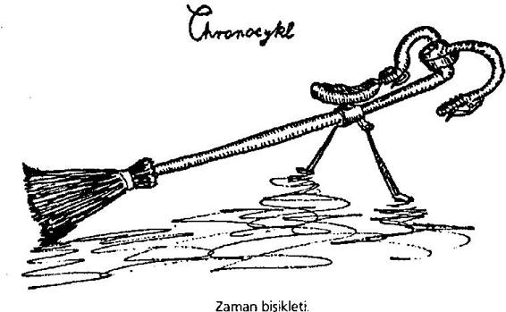

Uyarı: Keskin baharat kullanımı yasaktır. Aynı şekilde daha önceden ayarlanıp üzerine sarmısak sürülmüş bombaların bırakılması da yasaktır. Böyle bir davranış izinsiz avlanmaya girer ve yasal kovuşturmaya uğrar.
Av sahasının sınırında bekçi Wawr bizi karşıladı, güneşte kristal gibi parlayan ailesinin arasındaydı. Çok dost canlısı ve konuksever biriydi; bir şey içmemiz için bizi davet etti, sevimli evinde birkaç saat geçirip gerçek skuamp hikâyeleri ve Wawr ile oğullarının avcılık anılarını dinledik Derken ansızın nefesi kesilmiş bir haberci içeriye daldı, öncülerin bir skuampı gizlendiği yerden çıkardığını ve çalılığın ortasına getirdiğini söyledi.
"Skuamplar," diye açıkladı bekçi, "karınları iyice acıksın diye önce biraz hareket ettirilmelidir."
Üzerime sos sürülmüş bir halde ve bombamla baharatları taşıyarak, Wawr ile rehberimin eşliğinde yola çıktım. Torga girdik. Yol kısa zamanda geçilmez çalılıkların içinde kayboldu. İlerlemek güçleşti, arada sırada skuamp izlerine rastlıyorduk, bunlar altı metre çapında çukurlardı. Hiç durmadan yürüdük, yürüdük. Derken yer sarsıldı ve rehberim durdu, dokungacıyla sessiz olmamızı işaret etti. Sanki ufkun biraz üzerinde şiddetli bir fırtına oluyormuş gibi şimşek sesleri duyuluyordu.
"Duydunuz mu?" diye fısıldadı rehber. "Bir skuamp mı?" "Evet. Bir yavru."
Artık daha yavaş ve daha dikkatli bir şekilde ilerliyorduk. Gürültü kesildi, torg yeniden sessizliğe gömüldü. Sonunda çalıların çevrelediği açık bir alan ortaya çıktı. Onun kenarında arkadaşlarım uygun bir yer buldu ve üzerime baharat sürdüler, kısa saplı süpürgeyle bombanın elimde olduğundan emin olduktan sonra, sabırlı olmamı tavsiye ederek ayak parmaklarına basa basa uzaklaştılar. Bir süre, oktopolusların vınlayıp mırıldanmasından başka, sessizliği bozan bir şey olmadı; bacaklarım tutulmuştu, derken ansızın yer sarsılmaya başladı. Uzakta bir hareket gördüm - açıklığın uzak ucundaki ağaç tepeleri sallanıp düştü, canavarın geldiği yönü gösteriyordu bu. Gerçekten de büyüktü. Sonra skuamp açıklığa baktı, düşmüş bazı ağaç gövdelerinin üzerine basarak yürümeyi sürdürdü. Haşmetle iki yana sallanarak, gürültülü bir şekilde burnunu çekerek, tam benim bulunduğum yöne doğru geldi. İki elimle bombaya sarıldım ve tamamen sakin bir şekilde bekledim. Skuamp benden elli metre kadar uzakta durup dudaklarını yaladı. Saydam gövdesinin içinde, birçok talihsiz avcının kalıntılarını görebiliyordum.
Skuamp bir süre düşündü. Hayvanın gideceğinden korkmaya başladım, ama sonra yaklaştı ve tadıma baktı. Boğuk sesli bir şapırtı duydum ve yer ayaklarımın altından kaydı.
"Onu yakaladım!" diye düşündüm. Skuampın içi başlangıçta göründüğü kadar karanlık değildi. Üzerimi süpürüp ağır bombayı kaldırdım ve tam onu ayarlayacaktım ki, biri öksürdü. İrkilerek başımı kaldırdım ve karşımda tanımadığım bir Ardrite gördüm, o da bir bombaya doğru eğilmişti. Bir dakika kadar birbirimizi süzdük.
"Burada ne yapıyorsunuz?" diye sordum.
"Skuamp avlıyorum," diye yanıtladı beriki.
"Ben de öyle," dedim, "ama lütfen devam edin. Önce siz geldiniz."
"Saçma," dedi, "siz ziyaretçisiniz."
"Hayır, gerçekten," diye itiraz ettim. "Ben bombamı bir başka sefer için saklayacağım. Lütfen burada bulunmam size engel olmasın."
"Olmaz öyle şey!" diye haykırdı adam. "Siz bizim konuğumuzsunuz."
"Ama, ben her şeyden önce bir avcıyım."
"Ben de bir ev sahibiyim ve bu skuamptan benim yüzümden vazgeçmenizi kabul edemem! Acele edin, çünkü sos etkisini göstermeye başladı!"
Gerçekten de skuamp huzursuzlanmaya başlamıştı, güçlü soluması bize kadar geliyordu, aynı anda çalışan yüzlerce lokomotif gibiydi. Ardrite'i ikna edemeyeceğimi görerek, bombayı ayarladım ve yeni arkadaşımı bekledim, ama o önden gitmem için ısrar etti. Kısa bir süre sonra skuampı terk ettik. İki kat yüksekliğinde bir yerden düştüğüm için ayak bileğimi biraz incittim. Skuamp rahatlamış bir halde çalıların arasına daldı, büyük bir gürültüyle ağaçları söküyordu. Derken korkunç bir patlama oldu, sonra sessizlik.
"Bravo, eski tüfek! Tebrikler!" diye bağırdı avcı, elimi içtenlikle sıkarak. Aynı anda bekçi ile rehberim geldi.
Hava kararıyordu, hızla geri dönmek zorundaydık; bekçi skuampı bizzat dolduracağına ve ilk yük gemisiyle Dünya'ya göndereceğine söz verdi.
5. Xl. Dört gündür tek kelime bile yazmadım. Çok işim vardı. Kozmos Kültürel Kaynaşma Komisyonu'ndan bazı tiplerle görüşmeler, müze ziyaretleri, resmî davetler, radyo konuşmalarıyla geçen sabahların ardından, öğleden sonra yine ziyaretler, resmi davetler ve konferanslar. Yorgunluktan bittim. Benimle ilgilenen KKKK delegesi dün bana bir vumbum olmasının beklendiğini söyledi, ama ona vumbum nedir diye sormayı unuttum. Bir ara Ardritelerin tanınmış bilim adamı Profesör Pook'u göreceğim, ama ne zaman bilmiyorum.
6. Xl. Otelde, erkenden, müthiş bir gürültüyle uyandım. Yataktan fırladığımda şehrin üzerinde büyük duman ve alev bulutları gördüm. Danışmaya telefon edip ne olduğunu sordum.
Antika bir buhar robotu (19. Louis).Antika bir buhar robotu (19. Louis).
Antika bir buhar robotu (19. Louis).
Antika bir buhar robotu (19. Louis).
"Önemli bir şey değil," dedi görevli, "endişelenecek bir şey yok, efendim, sadece bir vumbum." "Vumbum mu?"
"Evet, bir vumbum, göktaşı yağmuru, on ayda bir olur."
"Ama bu korkunç bir şey!" diye bağırdım. "Bir sığınağa gitmem gerekmez mi?"
"Ah, hayır, göktaşı çarpmasına hiçbir sığınak dayanmaz. Ama gerçekten, efendim, bütün vatandaşlar gibi sizin de bir yedeğiniz var, korkacak bir şey yok."
"Yedek mi, ne demek istiyorsunuz?" diye sordum, ama kadın çoktan telefonu kapatmıştı. Hemen giyinip sokağa çıktım. Trafik her günkü gibiydi, yayalar işlerine koşuşturuyor, rengarenk madalyalarla pırıl pırıl gözüken yetkililer arabayla ofislerine gidiyor ve parklarda çocuklar ışık saçarak ve şarkı söyleyerek oynuyordu. Bir süre sonra patlamalar azaldı; sadece hiç dinmeyen bir uğultu geliyordu uzaktan. Hiç kimsenin ilgilenmediğini görünce, herhalde bu Vumbum dedikleri şey çok önemli bir olay değil, diye düşündüm ve daha önceden planladığım gibi hayvanat bahçesine gittim.
Müdür benimle bizzat ilgilenerek bana etrafı gezdirdi, narin yapılı ve sinirli bir Ardrite idi, hoş bir parıltısı vardı. Ubbidub Hayvanat Bahçesi bakımlı bir yerdi; müdür, gururla, koleksiyonlarında Galaksi'nin en ücra köşelerinden -bir tane de Dünya'dan olmak üzere- gelen örnekler olduğunu söyledi. Duygulanıp onu görmek istedim.
"Ne yazık ki, şu an mümkün değil," dedi müdür ve ona soru sorar gibi baktığımı görünce ekledi:
"Şu an uyuma zamanları. Onların iklime uyum sağlaması konusunda çok sıkıntı çektik, anlıyorsunuz değil mi, bir ara tek bir tanesinin bile sağ kalmayacağından endişe duydum, ama neyse ki uzmanlarımızın geliştirdiği vitamin takviyeleri çok iyi sonuçlar verdi."
"Anlıyorum ... peki ne çeşit hayvanlar?"
"Sinekler. Sırası gelmişken sorayım, skuamp sever misiniz?"
Bana tuhaf ve sorgulayıcı bir bakış fırlattı, bu yüzden sesime gerçek bir hayranlık ifadesi vererek yanıt verdim:
"Ah, onlar için deli oluyorum - harika yaratıklar!" Müdür parıldadı.
"Güzel. Onları görmeye gidelim, ama önce bana bir dakika izin verin."
Bir kangal iple geri döndü ve beni skuamp kafesine götürdü, çevresinde yüz metre boyunda bir duvar vardı. Müdür kapıyı açtı ve önden girmeme izin verdi.
"İçiniz rahat olsun," dedi adam, "benim skuampım tamamen ehlileşmiştir."
Kendimi yapay bir torg tarlasında buldum; otlamakta olan altı veya yedi skuamp vardı, şahane örneklerdi, her birinin eni üç hektar kadardı. En irileri, müdürün sesini duyunca yaklaşıp kuyruğunu uzattı. Müdür onun üzerine tırmandı ve kendisini izlemem için işaret etti - ben de öyle yaptım. Açı çok dik olunca, müdür ipi çözdü ve bir ucunu belime bağlamam için bana verdi. Bağlanmış bir halde iki saatten fazla tırmandık Skuampın tepesine geldiğimizde müdür sessizce oturdu, gerçekten duygulanmıştı. Onun duygularına saygı göstererek ben de konuşmadım. Bir süre sonra şöyle dedi:
"Buranın güzel bir manzarası var, siz ne dersiniz?"
Gerçekten de neredeyse bütün Ubbidub, sivri kuleleri, tapınakları ve kauçuk kuleleriyle ayaklarımızın altındaydı; sokaklarında karınca büyüklüğünde Ardriteler dolaşıyordu.
Müdür, canavarın sırtının zirveye yakın kısmını öyle yumuşak hareketlerle okşuyordu ki, bunu görünce "Siz skuampı seviyorsunuz," dedim yavaşça.
"Onlara aşığım," dedi kısaca, yüzünü bana çevirerek. "Hem zaten skuamp bizim uygarlığımızın beşiğidir," diye ekledi. Sonra biraz düşünüp devam etti: "Bir zamanlar, binlerce, binlerce yıl önce, şehirlerimiz, şahane evlerimiz, teknolojimiz, yedeklerimiz yoktu ... O günlerde bu nazik ve heybetli varlıklar bize baktı, vurnbumun zor dönemlerini sağ salim atlatmamızı sağladı. Skuamp olmasıydı, tek bir Ardrite bile şu anki mutlu günleri göremezdi, oysa bizler şimdi onları avlıyor, yok ediyor, soylarını kurutuyoruz! Ne kadar büyük ve canavarca bir nankörlük!"
Sözünü kesmeye cesaret edemedim Bir dakika kadar adam kendini toplayamadı, sonra konuşmaya devam etti:
"O avcılardan nefret ediyorum, iyiliğe kötülükle karşılık veriyorlar! O avlanma ilanlarını, o tabelaları gördünüz sanırım." "Evet."
Müdürün sözleri kendimden utanmama neden olmuştu, geçen gün işlediğim suçu öğreneceği düşüncesi yüreğimi titretti; zira ben de kendi ellerimle bir skuamp avlamıştım. Bu tehlikeli konudan uzaklaşma isteğiyle müdüre sordum:
"Gerçekten onlara çok şey mi borçlusunuz? Bunun farkında değildim..."
"Ne - farkında değil misiniz? Ama bizi yirmi bin yıl rahminde taşıyanlar, skuamplardı! Atalarımız, öldürücü göktaşı yağmurlarında skuampların içinde, onların güçlü zırhlarıyla korunarak yaşarken, bugünkü durumumuza geldiler: Yani geceleri parlayan zeki ve güzel varlıklar oldular. Ve siz bunun farkında değilsiniz, öyle mi?"
"Ben bir yabancıyım..." diye mırıldandım, içimden bir daha bir skuampa asla el kaldırmayacağıma yemin ederek.
"Evet, öyle ya..." diye karşılık verdi müdür, artık beni dinlemiyordu, sonra ayağa kalktı. "Ne yazık ki geri dönmek zorundayız: İlgilenmem gereken işler var..."
Hayvanat bahçesinden bir taksiyle Galax'a gittim, benim için ayrılmış bazı biletleri alacaktım.
Şehrin merkezinde gök gürlemesine benzeyen patlamalar yeniden işitilmeye başlamıştı, gürültü gittikçe daha yakından ve daha sık aralıklarla geliyordu. Ama yayaların hiçbiri en küçük bir şekilde bu durumdan rahatsız görünmüyordu, bu yüzden ben de bir şey söylemedim. Taksi Galax'in önünde durdu. Görevli bana hayvanat bahçesini beğenip beğenmediğimi sordu.
"Evet, çok beğendim," dedim, "ama ... Tanrım!"
Galax yerinden oynadı. Yolun karşısındaki iki iş merkezi -pencereden kolayca görünüyordu- bir göktaşının çarpmasıyla parçalandı. Kulaklarım sağırlaşmış bir şekilde, yalpalayarak bir duvara yanaştım.
"Önemli değil," dedi görevli. "Zamanla alışırsınız. İşte biletle-"
Sözünü bitiremedi. Bir şimşek çaktı, bir gürültü koptu, her yer toz duman oldu, ortalık sakinleşince, benimle konuşan kişinin durduğu yerde kocaman bir delik gördüm. Donup kaldım. Aradan bir dakika geçmeden tulum giymiş bir sürü Ardrite deliği onardı ve tekerlekli bir arabayla kalın sargılar içinde bir şey getirildi. Sargılar çözülünce, gözlerimin önünde görevli belirdi, biletler elindeydi. Adam üzerindeki ambalaj artıklarını temizledi, oturağına tırmandı ve şöyle dedi:
"Biletleriniz. Size önemli olmadığını söylemiştim. Acil durumlarda hepimizin yerine yenisi konur. Sakinliğime şaşıyorsunuz, değil mi? Ne yapalım, bu durum otuz bin yıldır böyle sürüp gidiyor, buna alıştık Eğer öğle yemeği arzu ederseniz, Galax restoranı şu anda açık. Alt katta, solda."
"Hayır teşekkür ederim, ben - ben aç değilim," diye yanıtladım ve biraz dizlerim titreyerek, patlamalar ve gök gürlemeleri arasında dışarıya çıktım. Ansızın bir öfkeye kapıldım.
"Onlara, bir Dünyalının korktuğunu görme fırsatı vermeyeceğim!" diye düşündüm ve saatime bakarak taksiye tiyatroya çekmesini söyledim.
Yolda giderken bir göktaşı taksiyi ezdi, bu yüzden bir başkasına bindim. Bir gün önce tiyatro binasının durduğu yerde artık üzerinden dumanlar çıkan bir moloz yığını vardı.
"Bu biletler için paramı geri alabilecek miyim?" diye sordum, sokakta duran gişe memuruna.
"Şüphesiz hayır. Gösteri tam vaktinde başlıyor."
'Tam vaktinde mi? Ama bir göktaşı daha az önce..."
"Hâlâ yirmi dakikamız var," dedi gişe memuru, saatine bakarak.
"Evet, ama... "
"Lütfen bilet gişesinin önünden çekilir misiniz? Bilet almak istiyoruz!" diye bağırdı arkamda sıraya girmiş bazı kişiler. Omuz silkerek kenara çekildim. Bu arada iki büyük makine molozları yüklenmiş, götürmüştü. Birkaç dakika içinde tiyatro alanı temizlendi.
"Açık havada mı oynayacaklar?" diye sordum bekleyenlerden birine. Adam programla kendini yelpazeliyordu.
"Şüphesiz hayır! Sanırım her şey alışılageldiği gibi olacak," diye yanıtladı adam.
Dudağımı ısırdım, kızmıştım, adam beni aptal yerine koyuyor sandım. Çok büyük bir tanker yanaştı. İçinden hamurumsu, kiraz kırmızısı bir madde döküldü, büyükçe bir topak oluştu. Hemen bu lapamsı, üzerinden dumanlar tüten kütlenin içine borular sokup hava pompalamaya başladılar. Yığın, çok büyük bir hızla büyüyen bir kabarcık halini aldı. Bir dakika sonra tiyatro binasının tam kopyası karşımızdaydı, sadece çok yumuşaktı, zira rüzgârda dalgalanıyordu. Ama beş dakika daha geçince yeni şişirilmiş yapı sertleşti; tam o sırada bir göktaşı tavanın bir kısmını parçaladı. Bu yüzden yeni bir tavan şişirildi, sonra kapılar ardına kadar açıldı ve seyirciler içeriye doldu. Yerime oturunca koltuğumun hâlâ sıcak olduğunu fark ettim. Az önceki felaketten kalan tek iz buydu. Yanımda oturan birine tiyatroyu yeniden inşa etmekte kullandıkları maddenin ne olduğunu sordum - Ardritelerin meşhur yapay kauçuğuymuş.
Gösteri bir dakika geç başladı. Gong sesiyle bina karardı, közleşmiş kömürlerle dolu bir mangala benziyordu, sadece aktörler pırıl pırıldılar. Oynadıkları oyun sembolik ve tarihiydi; doğrusunu söylemek gerekirse, bazı şeyler renk pandomimiyle canlandırıldığı için, pek bir şey anlamadım. İlk sahne bir tapınakta geçiyordu; bir grup genç kız, nişanlılarıyla birlikte şarkılar söyleyerek, Santar'ın heykelini çiçeklerle süslediler.
Ansızın ortaya amber renkli bir başrahip çıktı ve kızların en güzel olanı -su gibi berraktı- dışındakileri kovaladı. Sonra kızı heykelin içine kapattı. Hapsedilen kız sevgilisini çağıran bir arya söyledi, delikanlı koşup geldi ve yaşlı rahibi söndürdü. Tam o sırada bir göktaşı çatıyı, dekorun bir kısmını ve güzel genç kızı ezip tuzla buz etti, ama hemen suflör deliğinden yedeğini çıkardılar ve bu işi o kadar ustaca yaptılar ki, eğer o sırada öksürmüş veya gözünüzü kırpmış olsaydınız, hiçbir şeyin farkına varmayacaktınız. Bundan sonra âşıklar bir aile kurmaya karar verdi ve sahne rahibin uçurumdan yuvarlanmasıyla sona erdi.
Aradan sonra perde yeniden kalkınca, karı, koca ve çocukların müzik eşliğinde ileri geri sallanan enfes küresini seyrettim. İçeriye bir uşak girdi ve adı bilinmeyen bir hayırseverin evli çifte bir sontu buketi göndermiş olduğunu söyledi. Sahneye tekerleklerin üzerinde dev bir sandık getirildi; nefesim kesilmiş bir halde sandığın açılmasını izledim. Ne var ki, tam kapak kaldırılırken, bir şey şiddetle alnıma çarptı ve bayıldım. Kendime geldiğim zaman, aynı yerde oturuyordum. Sahnede sontulardan söz edilmiyordu artık, sönmüş rahip fır fır dönüyor ve trajik bir şekilde parlayan çocuklara ve ana babalarına korkunç lanetler yağdırıyordu. Kafamı tuttum - şişlik yoktu.
"Bana ne oldu?" diye fısıldadım yanımdaki bayana.
"Anlamadım? Ah, size bir göktaşı çarptı, ama bir şey kaçırmadınız, inanın bana, o düet kesinlikle bir felaketti. Şüphesiz utanılacak bir durum: Yedeğiniz için ta Galax'a kadar gitmek zorunda kaldılar," diye fısıldadı hoş bayan.
"Ne yedeği?" diye sordum, ansızın elim ayağım kesilerek.
"Ne demek, şüphesiz sizinki..."
"O halde ben neredeyim?"
"Nerede mi? Burada tiyatroda. İyi misiniz?"
"O halde ben bir yedeğim, öyle mi?"
"Kesinlikle."
"Ama daha önce burada oturan ben nerede?"
Önümüzdekiler, "Hişşt!" dediler ve komşum sustu.
"Lütfen," diye fısıldadım, "bana söylemeniz gerek, o nerede ... o... ne demek istediğimi biliyorsunuz."
"Susun! Nedir bu?! Duyamıyoruz!" artık dört yandan tıslama sesleri geliyordu. Arkamda oturan kişi, öfkeden kızarmış bir şekilde, yer göstericiyi çağırmaya başladı. Ölü müydüm diri mi bilemeden kaçtım tiyatrodan, taksiyle otele geri döndüm ve kendimi dikkatle aynada inceledim. Biraz moralim düzeldi, zira bir değişiklik yok gibi görünüyordu, ama daha yakından bakınca korkunç bir şey fark ettim: Gömleğim tersti ve düğmelerin hepsi yanlış iliklenmişti - beni giydiren kişilerin Dünya giysileri hakkında bir şey bilmediği belliydi. Üstüne üstlük çoraplarımın içinden ambalaj parçacıkları silkeledim - hiç şüphesiz acele yüzünden unutulmuşlardı. Zorlukla nefes alıyordum, sonra telefon çaldı.
"Bu dördüncü arayışım," dedi KKKK'nın sekreteri. "Profesör Pook bugün sizi görmek istiyor."
"Kim? Profesör Pook mu?" diye tekrarladım, büyük bir gayretle kendimi toparlayarak. "Güzel. Ne zaman?"
"Sizin için ne zaman uygunsa. Eğer arzu ederseniz, şimdi."
"Ona hemen gideceğim!" Ansızın karar verdim. "Ve .. ve lütfen hesabımı kesin!"
"Gidiyor musunuz?" diye sordu sekreter, şaşırarak.
"Evet, gitmem gerek. Kendimde değilim!" diye açıkladım ve ahizeyi çarparak kapadım.
Üstümü değiştirip aşağı indim. Az önceki olaylar beni o kadar etkilemişti ki, tam bir taksiye binerken, bir göktaşı oteli tuzla buz edince gözümü bile kırpmadım ve şoförüme profesörün adresini verdim. Profesör şehir dışında, gümüş rengi dağların arasında yaşıyordu. Taksiyi adamın evinden epeyce uzakta durdurdum, son birkaç saatin gerginliğinden sonra biraz yürüme fırsatı bulduğuma seviniyordum. Yolda yürürken, iki büklüm yaşlı bir Ardrite fark ettim, adam el arabasına benzeyen üstü örtülü bir şeyi yavaş yavaş itiyordu. Beni kibarca selamladı; ben de karşılık verdim. Bir iki dakika yan yana yürüdük. Köşeyi dönünce profesörün evini çeviren çit göründü; diğer tarafından dumanlar yükseliyordu. Yanımdaki Ardrite tökezledi; sonra örtünün altından bir ses işittim.
"Şimdi mi?"
"Daha değil," diye yanıtladı hamal.
Bu durum beni şaşırttı, ama bir şey söylemedim. Parmaklığa geldiğimiz vakit durdum ve profesörün evinin bulunması gereken yerden yükselen dumana baktım. Hamal, bu konuyu kendisine açınca, başıyla onayladı.
"Doğru, bir göktaşı düştü, ee, hemen hemen on beş dakika önce."
"Olamaz!!" diye haykırdım, dehşete düşerek. "Ne kadar feci!" "Kauçuk karıştırıcı neredeyse burada olur," dedi hamal. "Burası şehir dışı, bilirsiniz, bizim için hiç acele etmezler."
"Şimdi mi?" O tırmalayıcı ses el arabasının içinden yeniden yükseldi.
"Daha değil," dedi hamal ve bana döndü: "Lütfen bahçe kapısını açar mısınız?"
Dediğini yaptım ve sordum:
"Siz de profesöre mi gidiyorsunuz...?"
"Evet, bir yedek getirdim," dedi hamal, örtüyü kaldırmaya başlayarak. Dikkatle sarılıp bağlanmış büyük bir paket görünce nefesimi tuttum. Kağıt bir yerinden yırtılmıştı; canlı bir göz dışarıya baktı.
"Ah ... beni görmeye geldiniz ... geldiniz ..." diye gıcırdadı paketin içindeki yaşlı ses, "hemen geliyorum ... geliyorum ... lütfen kameriyede bekleyin..."
"Evet, ben ... peki ..." dedim, ama hamal yükünü iterken geri döndüm, parmaklığın üzerinden atladım ve elimden geldiğince hızlı bir şekilde hava limanına koştum. Bir saat içinde uzaydaydım, yıldızların arasında uçuyordum. Umarım Profesör Pook bu yüzden bana kızmaz.
YİRMİNCİ YOLCULUK
Hyades'ten döneli bir gün bile olmamıştı, her şey o zaman başladı. (Hyades yuvarlak bir yıldız kümesidir; yıldızlar o kadar sıkışıktır ki, uygarlıklar dönecek yer bulamazlar.) Henüz bavullarımın yarısını bile boşaltmamıştım -yolculuklarımda topladığım türlerle doluydular- ve yorgunluktan kollarım kopmak üzereydi. Bavulları bodruma koydum ve bu işle biraz dinlendikten sonra ilgilenmeye karar verdim. Dönüş yolculuğu çok uzun sürmüştü ve o an tek istediğim şey, şöminenin yanındaki oymalı koltuğuma oturup bacaklarımı uzatmak, ellerimi eski ceketimin cebine sokmak ve ateşin üzerinde taşan sütten başka bir şeyi dert etmemekti.
Ne var ki, bu tür hayaller kurduğunuz zamanlarda genellikle olduğu gibi, işler böyle yürümedi. Roketten çıkardığım ilk paketin göçmüş olduğunu fark ettim ve toplamış olduğum yüzlerce paha biçilmez tür için endişeye kapılarak, hemen paketi açmaya başladım. Bingetlerin durumu iyiydi, ama paketin dibinde kalan müpler ezilmişti. Her şeyi bu şekilde ortada bırakamazdım; birkaç saat içinde en büyük sandıkların kapaklarını kaldırmış, sandıkları açmış ve fentikelleri kurusunlar diye kaloriferin üstüne sermiştim -termostaki çay yüzünden sırılsıklam olmuşlardı- ama doldurulmuş örnekleri gördüğüm vakit tam anlamıyla dehşete düştüm. Bunlar koleksiyonumun gururu, en değerli parçalarıydı; bütün dönüş yolu boyunca onlara en uygun gelecek yerin neresi olacağım düşünmüştüm, zira Regulus'taki militarasyonun ürünü olan bu şeyler çok ender parçalardır. (Regulus bütün nüfusu askerlerden meydana gelmiş bir uygarlıktır, orada tek bir sivil bile bulamazsınız.) Tottenham'ın yazdığının tersine, hayvan doldurmak Reguluslular için bir boş vakit geçirme aracı değil, ibadet ile spor arasında bir şeydir. Tottenham, onların hayvan doldurmalarının nedenini anlayamamış. Regulus'ta bu işin sembolik bir anlamı vardır; Tottenham'ın şaşkınlık dolu sözleri ve retorik soruları, sadece kendisinin ne kadar cahil olduğunu gösteriyor. Hayvan doldurma, evlilik hayatında başka, okulda başka anlamlar taşır - ayrıca tatillerde, flörtlerde yapılan doldurmalar da vardır. Ama şu an bunların ayrıntısına giremem. Regulus'tan getirdiklerimi üst kata taşırken belimi incittiğimi söylemem yeterli, bu yüzden hâlâ yapılacak bir sürü iş olmasına rağmen, kendi kendime bu kadar çok çalışmanın bir yararı olmadığını söyledim. Şimperleri bodrumdaki çamaşır ipine astım ve akşam yemeği hazırlamak için mutfağa gittim. Artık bundan sonra sadece tembel tembel oturmak, dinlenmek, dolce far niente,5 dedim kararlı bir şekilde. Ama hâlâ peşimi bırakmayan bir sürü hatıra vardı, tıpkı fırtınanın ardından kabaran deniz gibi. Yumurtayı kırarken ocağın mavi alevine baktım - bir özelliği yoktu, ama Perseus Novası'na ne kadar benziyordu. Şu perdeler - bir keresinde atom reaktörünü örttüğüm o asbest çarşaf kadar beyazdı... "Hayır, yeter!" dedim kendi kendime. Bunun yerine yumurtalarını nasıl yemek istediğine karar ver - omlet şeklinde mi, yoksa haşlanmış mı? Tam moralimi düzeltmiştim ki, bütün ev sarsıldı. Henüz pişmemiş olan yumurtalar yere döküldü ve tam merdivene yönelmiştim ki, çığ düşüyormuş gibi uzun ve kesintisiz bir gümbürtü işittim. Acaba tavan mı çökmüştü? Yoksa bir göktaşı mı? Ama bu imkânsızdı! Böyle şeyler olmazdı!
Paketlerle darmadağınık etmediğim tek yer çalışma odasıydı, gürültü de oradan geliyordu. İlk gördüğüm şey, yan yatmış bir kitaplığın dibindeki kitap yığınları oldu. Bir adam kozmik ansiklopedimin kalın ciltlerinin altından geri geri çıkıp emekledi, yere düşmüş kitapları dizleriyle ezdi - sanki o zamana kadar vermiş olduğu hasar yetmezmiş gibi. Daha ben ağzımı açamadan, adam peşi sıra uzun bir madenî boruya benzer bir şeyi saplarından tutarak çekti - tekerlekleri olmayan bir bisiklete benziyordu. Öksürdüm, ama hâlâ dört ayak üzerinde duran davetsiz konuğum bana hiç aldırmadı. Daha hızlı öksürdüm, adamın profili tuhaf bir şekilde tanıdık geliyordu, ama ancak ayağa kalktığı vakit onu tanıdım. Adam Ijon Tichy idi, yani ben. Bir aynaya bakar gibiydim. Bir keresinde yine böyle bir olay gelmişti başıma, ama çekimsel girdapların içindeyken, kendi evimin sakin sessizliği içindeyken değil!
Adam bana dalgın bir şekilde baktı ve aracının üzerine eğildi; bu kayıtsız davranışı, özellikle de bana bir şey söylemeye tenezzül etmemesi, sonunda sabrımı taşırdı.
"Bunun anlamı nedir?" dedim sesimi yükseltmemeye çalışarak.
"Az sonra açıklayacağım ... bekle," diye mırıldandı adam, sonra ayağa kalktı, boruya benzeyen şeyi masa lambasına yaklaştırdı, daha iyi ışık gelsin diye abajuru eğdi, kolu yerinde tutarken kâğıdı ayarladı (abajurun düşeceğini biliyor, köpek herif, o halde ben olmalı) ve parmağıyla bazı düğmelere dokundu, endişeli olduğu açıkça belliydi.
"En azından özür dileyebilirsin!" Gittikçe artan öfkemi saklayamıyordum. Adam gülümsedi. Aracını duvara dayadı. Koltuğuma oturdu, en sevdiğim pipomu çıkardı ve yeri konusunda hiç yanılmadan tütün kesesine uzandı.
Gerçekten de bu kadarı fazlaydı.
"Bu kadarı da olmaz!" dedim.
Adam eliyle oturmamı işaret etti. Yarattığı hasarın listesini çıkarmaktan kendimi alamadım -iki ağır astronomik atlasın cildi yırtılmıştı!- yine de bir iskemle çekip sabırla bekledim ve parmaklarımı çevirmeye başladım. Ona açıklama yapması ve özür dilemesi için beş dakika verecektim, eğer tatmin olmazsam, işleri halletmek için başka yollara başvuracaktım.
"Yapma!" dedi davetsiz konuğum. "Sen akıllı bir adamsın! işleri nasıl halledeceksin bakalım? Bugün vücudumda meydana gelen herhangi bir çürük, yarın seninkisinde ortaya çıkacak!"
Yanıt vermedim, ama düşündüm. Eğer adamın ben olduğu doğruysa ve bir şekilde yeniden bir zaman döngüsüne girmişsem (ama Tanrı aşkına, bu nasıl olur?), o zaman adamın gerçekten de pipomu, hatta evimi bile, almaya hakkı olabilirdi. Ama kitaplığı devirmenin ne alemi vardı?
"İstemeden oldu," dedi adam, hoş kokulu bir duman bulutunun içinden, ayakkabısının -oldukça şıktı- burnunu inceleyerek. Bacak bacak üzerine attı, üstte duranı ileri geri salladı. "Zaman bisikleti, fren yaptığım sırada beni fırlattı. Sekiz buçuk yerine, sekiz buçuğu bir saniyenin yüzde biri geçe içeriye uçtum. Eğer görüntüyü daha iyi ayarlasalardı, odanın ortasına inmiş olacaktım."
"Anlamıyorum. (Gerçekten de hiçbir şey anlamıyordum.) Öncelikle: Bir telepatist misin? Sadece düşündüğüm sorulara nasıl yanıt verebiliyorsun? ikincisi: Eğer gerçekten sen bensen ve zaman içinden gelmişsen, bunun mekânla ne ilgisi var? Niçin kitaplarımı mahvettin?!"
"Eğer bir dakika durup düşünürsen, bütün bu soruların yanıtını kendin bulacaksın. Ben senden daha sonrayım, bu yüzden ne düşündüğümü hatırlamam gerek, yani senin ne düşündüğünü, zira ben senim, ama daha ileri bir tarihten. Zaman ile mekâna gelince, Dünya dönüyor. Bir saniyenin yüzde biri kadar kaydım -belki daha az- ve mekân bu kısa süre içinde evle birlikte dört metre kadar hareket etti. Rosenbeisser'e bahçeye inmenin daha iyi olacağını söylemiştim, ama o beni bu görüntü için ikna etti.
"Pekâlâ. Tutalım bütün bunlar doğru. Peki anlamı ne?"
"Şüphesiz anlatacağım. Ama önce akşam yemeği yiyelim, bu uzun ve çok önemli bir hikâye. Sana tarihsel bir görev için özel bir haberci olarak geldim."
Adama inandığımı hissettim. Aşağı inip akşam yemeği ye dik, yani ne varsa onu; bütün yaptığım bir kutu sardalye açmak oldu (buzdolabında birkaç yumurta kalmıştı). Sonra mutfakta oturduk, zira kitaplığın haline bakıp canımı sıkmak istemiyordum. Adam bulaşıkları yıkamaya pek hevesli değildi, biraz duygu sömürüsü yapınca en azından kurulamayı kabul etti. Sonra masada oturduk, adam ciddi bir tavırla gözlerimin içine bakıp şöyle dedi:
"2661 yılından geliyorum, sana bir teklif yapmak için, böyle bir teklifi şimdiye kadar kimse ne duydu, ne de duyacak. Zaman Enstitüsü Araştırma Komitesi, benim -yani senin- PAPGEPOHKİTUM Projesi'nin başına geçmeni istiyor, bu kısaltmanın anlamı şudur: Paleolojik Programlama ve Gezegenler arası Planlama Optimum Hipersayar Kılgısı İçin Tarih-Uzakzaman Mühendisliği. Bu büyük görevi kabul edeceğinden eminim, zira insan ırkına ve tarihine karşı olağanüstü sorumluluğu olan bir görev ve biliyorum ki, sen -yani, ben- inisiyatif sahibi dürüst bir insansın."
"Önce biraz daha bilgi edinmek isterim - aslında anlamadığım nokta, niçin enstitünün bir delegasyon yerine seni -yani, beni- gönderdiği. Öncelikle, sen nasıl -yani, ben nasıl- oraya gittim?"
"Bunu en sonunda, ayrıca açıklayacağım. Esas konuya gelince, Molteris'i hatırlarsın herhalde, değil mi? O zavallı adam elle kullanılan bir zaman makinesi icat etmiş, bir gösteri yapmak istediği sırada feci şekilde can vermişti, çünkü kalkıştan hemen sonra ölecek kadar yaşlanmıştı."
Başımı sallayarak onayladım.
"Bu çeşit bir sürü teşebbüs olacak. Her yeni teknoloji başlangıçta ölümlere neden olur. Molteris, kalkanları olmayan tek koltuklu bir zaman aracı icat etmişti. Adamın, kilise kulesine kanatlarıyla tırmanıp kendi ölümlerine neden olan Ortaçağ köylülerinden farkı yoktu. 23. yüzyılda saat arabaları, takvim binekleri ve eşzaman motorsikletleri ortaya çıktı -ya da senin açından, ortaya çıkacaklar- ama gerçek zamandevinim devrimi ancak üç yüz yıl sonra başlayacak - adlarını vermeyeceğim kişiler sayesinde, onlarla şahsen tanışacaksın. Kısa mesafelerde zaman yolculuğu bir şeydir, bin yılların derinliklerine keşif seferleri yapmak başka bir şey. Aradaki fark, bir gezinti için şehre inmekle, yıldızlara yolculuk etmek arasındaki farka benzer. Benim çağım, Zamançekimi, Zamandevinimi ve Uzakzaman çağı. Zamanda yolculuk hakkında yığınla saçmalık yazıldı, tıpkı daha önce yıldız yolculukları hakkında yazılmış olduğu gibi - bilirsin, bir bilim adamı, zengin bir iş adamının maddi desteğiyle gidip derme çatma bir roket yapar, sonra ikisi -bayan arkadaşlarının eşliğinde- Galaksinin öbür ucuna giderler. Zamandevinimi, tıpkı yıldız yolculuğu gibi, çok büyük bir yatırım, harcama ve planlama gerektirir ... ama bunları kendin de anlayacaksın - oraya gidince, yani, uygun zamanda. İşin teknolojik tarafını şimdilik bırakalım. Önemli olan, onun arkasındaki maksat; bütün bu zahmete, sadece biri gidip firavunları korkutabilsin veya kendi büyük büyük büyükbabasını öldürsün diye girmedik. Dünyanın sosyal yapısı düzene kondu, aynı şekilde iklim de; 27. yüzyılda -ben oradan geliyorum-işler o kadar iyi gidiyor ki, daha iyisi olamaz, ama tarihimiz bizim için bir üzüntü kaynağı olmaya devam ediyor. Geçmişimizi biliyorsun, artık ona bir çeki düzen verme zamanı geldi!"
"Dur bir dakika," dedim, kulaklarım uğulduyordu. "Tarihin durumundan memnun değilsiniz, öyle mi? Peki, bu sizi niye ilgilendiriyor ki? Yani, bu değiştirebileceğiniz bir şey değil, öyle değil mi?"
"Saçmalama. Bu, PAPGEPOHKlTUM acil işler listesinde en başta geliyor. Sana daha önce de söyledim, Paleolojik Programlama ve Gezegenler arası Planlama Optimum Hipersayar Kılgısı İçin Tarih-Uzakzaman Mühendisliği. Zira Dünya tarihinin, insaniyet, akılcılık ve genel estetik ilkeleri doğrultusunda düzenlenmesi, temizlenmesi, düzeltilmesi, uyarlanıp mükemmelleştirilmesi gerek. Şüphesiz senin de anlayacağın gibi, insanın soy ağacında böylesi cinayet ve mezbaha hikâyelerinin yer alması, önemli kozmik uygarlıklarla ilişki kurulmasında sıkıntı yaratıyor!"
"Geçmişin düzeltilmesi mi?" dedim, şaşkınlıktan dilim tutularak.

"Evet, hatta gerekirse, değişiklikler insanlığın ortaya çıkmasından önce yapılacak, böylece insan daha iyi bir durumda ortaya çıkacak. Gerekli para daha şimdiden toplandı, bununla birlikte genel müdür koltuğu hâlâ boş. Herkes bu görevin getireceği risklerden korkuyor."
"Hiç gönüllü yok mu?" Şaşkınlığım her dakika artıyordu.
"Her çakalın dünyayı yönetmek istediği o günler geçti artık. Kimse, kendisini yeterli bulmadığı bir alanda zor bir görev üstlenmek istemiyor. Bu yüzden kadro hâlâ boş, ama mesele çok acil."
"Ama bu konuda bir şey bilmiyorum. Üstelik, bu kadar insan arasında, neden ben?"
"Emrinde bir sürü uzman olacak. Hem zaten işin teknik tarafı senin derdin değil; birçok farklı hareket planı, değişik öneriler, politikalar, yöntemler var; tek gereken, dikkatli bir şekilde düşünülmüş ve sorumluluk taşıyan kararlar. Ve sen -yani, ben-bu kararları alacaksın. Hipersayarımız ruhsal araştırma yaparak şimdiye kadar yaşamış olan herkesi inceledi ve sonunda şuna karar verdi: Sen -yani, ben- projenin tek umudusun."
Uzunca bir sessizlikten sonra, sordum:
"Görüyorum ki bu ciddi bir iş. Görevi belki kabul ederim, belki de etmem. Dünya tarihi, hmm! Biraz düşünmem gerek. Ama nasıl oldu da bana gelen kişi sen oldun - yani, ben? Zamanda hiçbir yere gitmediğime eminim. Daha dün Hyades'ten döndüm."
"Elbette!" diye sözümü kesti adam. "Zira sen benim daha önceki halimsin! Teklifi kabul ettiğin vakit sana zaman bisikletini vereceğim, sen de gitmen gereken yere -yani, zamana- gideceksin."
"Bu benim soruma yanıt değil. Benim öğrenmek istediğim şey, senin 27. yüzyıla nasıl gittiğin?"
"Bir zaman makinesiyle gittim, başka nasıl olabilir? Sonra da oradan buraya, şimdiki zamana geldim."
"Evet, ama eğer ben hiçbir yere zaman makinesiyle gitmemişsem, o halde sen de, yani ben olan..." '
"Aptal olma. Ben senden daha sonrayım,' bu yüzden 27. yüzyıla gitmek için yola çıktıktan sonra, başına neler geleceğini şu anda bilmene imkân yok."
"Kaçamak konuşuyorsun!" diye homurdandım. "Bak, eğer bu teklifi kabul edersem, dosdoğru 2 7. yüzyıla gideceğim, doğru mu? Orada o PAPGEPOHKİTUM şeyini falan yöneteceğim. Peki senin bu tablodaki yerin ne?"
"Bütün gece böyle devam edebiliriz. Aynı şeyin etrafında dönüp duruyoruz. Bak, ne yapacaksın! Rosenbeisser'e sor, o sana açıklasın. Zaten zaman konusunda otorite olan kişi o, ben değilim. Bunun dışında bu problem, anlaşılması zor olsa da -zaman döngüleri her zaman böyledir- senin görevine -yani benim görevime- kıyasla çok önemsiz bir şey. Zira sözünü ettiğimiz şey tarihsel bir görev! Peki, ne diyorsun? Kabul mü? Zaman bisikleti çalışacak. Kontrol ettim, hasarlı değil."
"Zaman bisikleti çalışsın ya da çalışmasın, bu şekilde kalkıp gidemem."
"Gitmen gerek! Bu senin görevin! Gitmek zorundasın!"
"Ho ho! Lütfen bu zorundasın laflarını bırak! Böyle şeylerden hiç haz etmediğimi bilirsin. Keyfim isterse giderim - gitmemi gerektiren bir durum olduğuna ikna olduğum vakit. Bu Rosenbeisser de kim?"
"ZBE'nin Araştırma Müdürü. Senin baş yardımcın olacak."
"ZBE de nedir?"
"Zaman Bilimleri Enstitüsü."
"Ya reddedersem?"
"Reddedemezsin ... bunu yapmazsın ... bunun anlamı, mm, bunun anlamı cesaretin yok demektir ..."
Bunları söylerken dudağının kenarında saklı bir tebessüm gördüm sanki. Bu beni şüphelendirdi.
"Öyle mi? Peki neden?"
"Çünkü ...eh, bunu sana açıklayamam. Bu zamanın yapısıyla ilgili bir şey."
"Saçma. Eğer kabul etmezsem, o vakit bir yere gitmem, böylece ne o senin Rosenbeisser bana bir şey açıklar, ne de ben tarihe çeki düzen veririm."
Bunu biraz da vakit kazanmak için söylemiştim, çünkü hiç kimse böyle önemli kararları hemencecik almaz; ayrıca bana gelen kişinin neden o -yani ben- olduğu konusunda hiçbir fikrim olmamasına rağmen, ortada bir numara döndüğü, bir aldatmaca olduğu yolunda tuhaf bir duygu vardı içimde.
"Sana yanıtımı kırk sekiz saat sonra vereceğim!" dedim.
O hemen bir karara varmam için ısrar etmeye başladı, ama o ısrar ettikçe şüphem artıyordu. Sonunda adamın bana olan benzerliğinden bile şüphelenmeye başladım. Kılık değiştirmiş bir ajan bile olabilirdi. Bu düşünce aklıma gelir gelmez, onu sınavdan geçirmeye karar verdim. Burada işin püf noktası sadece benim bildiğim bir sırrı sormaktı.
"Niçin Yıldız Güncesi adlı kitabımda yer alan yolculukların numarası sırayla gitmiyor?" diye sordum.
"Halı halı!" diye güldü adam. "Demek bana inanmıyorsun, öyle mi? Bunun nedeni şu dostum: Bazı yolculuklar uzayda geçiyor, bazıları da zamanda, bu yüzden asla birinci yolculuk diye bir şey olamaz. Daima yolculukların daha başlamadığı bir zamana geri dönebilir ve herhangi bir yere gidebilirsin, o vakit, birinci yolculuk, ikinci yolculuk olacaktır, ve bu durum sonsuza kadar böyle sürüp gidebilir!"
Bu doğruydu. Gerçi bunu bilen birkaç kişi vardı, ama onlar da, Profesör Tarantoga'nın Ticholoji Kulübü'ne üye olan güvenilir dostlarımdı. O vakit kimlik belgesini görmek istedim. Kâğıtları düzgündü, yine de bu bir şey kanıtlamıyordu, kâğıtların sahtesini çıkarmak kolaydır. Sadece uzun yolculuklarımda, tek başımayken söylediğim bütün şarkıları söyleyince, şüphem büyük ölçüde azaldı. Bununla birlikte "kayan yıldız, kayan yıldız!" şarkısının nakaratını söylerken detone olduğunu fark ettim. Bunu kendisine söyledim; bu sözlerime alındı ve her zaman detone olan kişinin kendisi değil, ben olduğumu söyledi. O ana kadar sakin sayılabilecek konuşmamız bir tartışmaya, şiddetli bir kavgaya döndü, sonunda adam beni o kadar öfkelendirdi ki, ona evimden defolup gitmesini söyledim. Bu öfkeyle söylenmiş bir sözdü, aslında öyle demek istememiştim, ama o tek kelime etmeksizin ayağa kalktı, üst kata çıktı, zaman bisikletini doğrulttu, üzerine oturdu, bir şeyleri kurcaladı ve göz açıp kapayıncaya kadar bir duman bulutu -daha doğrusu bir sigara dumanı- içinde ortadan kayboldu. Duman da az sonra kayboldu - geride kalan tek şey, her yana dağılmış kitaplardı. Kendimi aptal gibi hissederek ayakta durdum, çünkü böyle bir şey beklemiyordum, adam gitmeye kalkınca da tükürdüğümü yalayamazdım. Bir iki dakika düşündükten sonra, dönüp mutfağa gittim, zira en azından üç saattir konuştuğumuz için yeniden karnım acıkmıştı. Buzdolabında hâlâ birkaç yumurta ve biraz salam vardı, ocağı açıp onları kızartmaya başladığını sırada, ikinci katta korkunç bir gürültü koptu.
O kadar irkildim ki, yumurtalar berbat oldu; salamla birlikte ateşin üzerine düştüler - bense güneşin altında ve üstünde yer alan her şeye küfrederek, basamakları üçer üçer çıkıp üst kata koştum.
Raflarda tek bir kitap kalmamıştı. Geri kalanlar büyük bir yığın halindeydi, adam onların altından, zaman bisikletini güçlükle peşi sıra çekerek -zira tam üzerine düşmüştü- dışarı çıktı.
"Peki, bunun ne anlamı ne?!" diye bağırdım, öfkeden morarmış bir şekilde.
"Az sonra açıklayacağım ... bekle ..." diye mırıldandı adam, zaman bisikletini lambaya doğru çekerken. Onu dalgın bir şekilde gözden geçirdi, bu ikinci tecavüzü için özür dileme zahmetinde bile bulunmadı. Artık bu kadarı çok fazlaydı.
"En azından özür dileyebilirsin! !" diye haykırdım, kendimi kaybetmiş bir şekilde.
Adam gülümsedi. Zaman bisikletini bir kenara koydu, yani duvara dayadı, pipoyu buldu, tütünümle doldurdu, yaktı, bacak bacak üzerine attı, öyle ki sonunda kafam iyice kızdı.
"Bu kadarı da olmaz!!" diye haykırdım. O ana kadar yerimden kımıldamamıştım, ama adamın hesabını gördükten sonra her yanının moraracağına yemin ettim. Benimle oyun oynuyordu, hem de kendi evimde!
"Boş ver," dedi adam ve esnedi. Kendinde bir kabahat görmediği açıkça belliydi. Ama az önce kitaplarımın geri kalan kısmını yere düşüren kişi oydu.
"İstemeden oldu," dedi adam, dumanı üfleyerek. "Zaman bisikleti yine kaydı..."
"Peki ama niye döndün?"
"Dönmek zorundaydım."
"Zorunda mıydın?"
"Sevgili dostum, bir zaman döngüsü içindeyiz," dedi adam, sakince. "Az sonra genel müdür görevini kabul etmen için ısrar edeceğim. Eğer reddedersen, gideceğim ve çok geçmeden geri döneceğim ve her şey yeniden başlayacak... "
"Bu imkânsız. Kapalı bir zaman döngüsü içinde miyiz?"
"Kesinlikle."
"Sana inanmıyorum! Eğer bu doğru olsaydı, söylediğimiz ve yaptığımız her şey kelimesi kelimesine aynı olurdu, benim şu anda söylediklerimle seninkiler ilk seferin aynısı değil!!"
"Zaman yolculuğu konusunda türlü hurafe vardır," dedi adam, "senin şu anda sözünü ettiğin şey de aralarında en saçma olanıdır. Bir zaman döngüsünde her şey benzer bir yol izler, ama aynı yolu izlemez, zira zamanın kapalı olması -aynı şekilde mekânın kapalı olması- hareket özgürlüğünü önlemez, sadece onu büyük ölçüde sınırlar! Eğer teklifi kabul edip 2661 yılına gidersen, daire bundan sonra açık bir döngüye dönecektir. Ama eğer reddeder ve beni yeniden kovarsan, yeniden döneceğim ve ... sonunu biliyorsun!"
"O halde başka bir seçeneğim yok mu?" dedim, öfkeden patlayacak gibiydim. "Evet, daha ilk başta bunun altında bir bit yeniği olduğunu anlamıştım! Evimden defol! Gözümün önünden git!!"
"Aptallığı bırak," dedi adam, sakince. "Şu anda her şey bana değil, sana bağlı, doğrusunu söylemek gerekirse, Rosenbeisser'in adamlar döngüyü ikimizin üzerine kapadı -kilitledi- ve sen müdür olmayı kabul edinceye kadar onun içinde kalacağız!"
"Amma da teklif ha!" diye bağırdım. "Peki, ya kafanı patlatırsam, ne olacak?"
"Zamanı gelince aynı şey senin de başına gelir. Karar senin -istersen teklifi kabul etme ve hayatımızın sonuna kadar bu şekilde birbirimizi eğlendirelim ... "
"Öyle mi! Seni bodruma kilitleyeceğim ve sonra keyfimin istediği yere gideceğim!"
"Kilitleme işini benim yapmam daha mümkün, zira daha kuvvetliyim!"
"Öyle mi?"
"Bunu senin de bilmen gerekir. 2661 yılındaki yemekler buradakilerden -şimdikilerden- daha besleyici, bana bir dakika bile karşı koyamazsın."
"Şimdi görürüz," dedim ve homurdanarak iskemleden kalktım. Adam yerinden kımıldamadı.
"Furjoto biliyorum," dedi sakince.
"O da nedir?"
"2661 yılına ait mükemmelleştirilmiş bir judo şekli. Seni bir saniye içinde yere serebilirim."
Çok öfkeliydim, ama kazandığım onca tecrübe sayesinde en güçlü duygularıma bile hâkim olmayı öğrenmiştim. Böylece onunla -yani, kendimle- konuştuktan sonra, bu işten bir çıkış yolu olmadığı sonucuna vardım. Üstelik, gelecekte bekleyen bu tarihsel görev hem görüşlerime, hem de kişiliğime uyuyordu. Tek hoşuma gitmeyen, bu işi yapmaya mecbur tutulmamdı, ama hesaplaşmam gereken kişinin o değil -o sadece bir piyondu- onun temsil ettiği kişiler olduğunu anlamıştım.
Adam bana zaman bisikletinin nasıl kullanılacağını gösterdi, birkaç püf nokta öğretti, böylece seleye oturdum ve tam ona ortalığı temizleyip kitap raflarını onarması için bir marangoz çağırmasını söyleyecektim ki, bunu yapmaya vakit bulamadım, zira adam çalıştırıcıya basmıştı. O anda adam, lambanın ışığı, bütün oda, her şey sanki patlayıp kayboldu. Altımdaki makine -arka kısmında geniş bir huniye benzeyen bir egzostu olan o madenî boru- sarsıldı; bazen o kadar şiddetli bir şekilde zıplıyordu ki, düşmemek için bütün gücümle gidonlara asılmak zorunda kaldım; hiçbir şey göremiyordum, sanki birisi yüzümü ve vücudumu bir tel fırçayla ovuşturuyor gibi bir hisse kapıldım; zaman içindeki yolculuğumun hızının gittikçe arttığını hissedince frene bastım, bunun üzerine dönüp duran karanlığın içinde gölgeli şekiller ortaya çıktı.
Çok büyük binalar andıran, kimi şişkin, kimi ince yapılı şeyler gördüm; onların ortasından, bir tel kafesten geçen rüzgâr gibi uçtum. Böylesi her geçişte, bir duvara çarpma tehlikesi vardı, elimde olmadan gözlerimi kapadım ve yeniden hızı -yani tempoyu- artırdım. Makine birkaç kez o kadar sarsıldı ki, kafam zangırdadı ve dişlerim birbirine çarptı. Bir noktada anlatması zor bir değişiklik hissettim, sanki şurup kıvamında bir ortamda, sertleşen zamkın içinde olmak gibi bir şeydi; aklımdan şöyle bir düşünce geçti: Sonunda mezarım olacak bir engelden geçiyordum ve amberin içindeki tuhaf bir böcek gibi harcın içinde donup kalarak zaman makinesiyle birlikte kapana sıkışacaktım. Ama yine ileriye doğru bir yalpalanma oldu, zaman makinesi titredi ve ben esnek bir şeyin üzerine kondum, o şey aşağıya doğru çöküp sallandı. Makine akımdan kaydı, beyaz bir ışık vurdu gözlerime; gözlerimi kapamak zorunda kaldım, kamaşmışlardı.
Gözlerimi tekrar açtığım vakit, çevremi bir uğultu almıştı. Büyük ve yuvarlak bir köpük plastiğin üzerinde yatıyordum, üzeri bir hedef tahtası gibi iç içe geçmiş dairelerle boyanmıştı; ters dönmüş zaman makinesi yakınımda duruyordu ve çevremde tek parçalı parlak üniformalar giymiş düzinelerce insan vardı. Kısa boylu, saçlar dökülmüş, çok açık sar saçlı bir adam minderin üzerine çıktı, ayağa kalkmama yardım etti ve elimi tutup sallamaya başladı, bir taraftan şöyle diyordu:
"Aramıza hoş geldiniz! Rosenbeisser!"
"Tichy," diye karşılık verdim, otomatik bir şekilde. Etrafıma bakındım. Bir şehir kadar büyük bir salondaydık, penceresi yoktu, gök mavisi bir tavan yüksekte asılı duruyordu; üzerine indiğime tıpatıp benzeyen yuvarlak şeyler bir sıra halinde, yan yana dizilmişti; bazıları boştu, bazılarında büyük bir faaliyet sürüyordu. Hem Rosenbeisser'e, hem de beni evimden çekip getirmekte kullandıkları bu zaman ağının diğer yaratıcılarına söylemek üzere birkaç acı söz hazırlamış olduğumu inkâr etmiyorum, ama bir şey söylemedim, çünkü ansızın bu büyük salonun bana neyi hatırlattığını fark ettim: Dev boyutta bir Hollywood stüdyosunu! Zırh giymiş üç adam yanımdan geçti; birinin, tepesinde tavus-kuşu tüyü olan bir miğferi ve yaldızlı bir kalkanı vardı, laboratuvar asistanları adamın göğsündeki mücevher kakmalı madalyonu düzelttiler, bir doktor şövalyenin çıplak koluna bir iğne yaptı, birisi hızlı bir şekilde zırhının kayışlarını bağladı, adama iki başlı bir kılıç ve kartal başlı aslanlarla süslenmiş geniş bir pelerin verildi; süssüz çelik giysiler giymiş diğer ikisi -herhalde eskortlarıydı- hedefin ortasında duran zaman bisikletlerinin selelerine çoktan oturmuşlardı bile, bu arada hoparlörden bir ses gürledi: Dikkat lütfen ... yirmi ... on dokuz ... on sekiz ..."
"Bu nedir?" diye sordum, şaşırmıştım, zira aynı anda -on metre kadar ötede- uzun beyaz gömlekler içinde bir dizi sıska derviş duruyordu; onlar da aşı oluyorlardı ve bir teknisyen içlerinden biriyle tartışıyordu; görünüşe bakılırsa yolcu, gömleğinin altına küçük bir tabanca saklamıştı; yüzlerinde savaş boyaları, yeni bilenmiş savaş baltalarını deneyen Kızılderililer gördüm, laboratuvar asistanları aceleyle onların kuş tüyü başlıklarını düzeltiyorlardı ve beyaz önlüklü bir yardımcı küçük, tahta bir el arabasının içinde çok pis, üstü başı yırtık, bacaksız bir dilenciyi başka bir daireye doğru itiyordu, adam Breughel'in korkunç sakatlarına ne kadar da benziyordu!
"Sıfır!" dedi hoparlör. Zaman bisikletleri üzerindeki üç zırhlı, hafif bir ışık çakması içinde ortadan kayboldu, geride havada asılı beyaz bir buhar kaldı, yanmış magnezyumun çıkardığı dumana benziyordu: Bunu daha önce de görmüştüm.
"Bunlar bizim anketçilerimiz," diye açıkladı Rosenbeisser. "Çeşitli yüzyıllarda kamuoyu araştırması yapıyorlar, hepsi istatistiksel şeyler, tamamen bilgi toplama amaçlı; şu ana kadar hiçbir düzeltici teşebbüse geçilmedi, sizi bekliyorduk!"
Adam bana eliyle yol gösterdi ve ardımdan geldi; gerisayım sesleri sürüyordu, kah orada kah burada bir ışık çakıyor, soluk duman bulutları yükseliyordu; araştırma ekipleri giderek azalmaya başladı, yerlerini yenileri aldı; her şey, tıpkı o berbat tarihî filmlerden birinin çekildiği dev bir stüdyoda olduğu gibiydi. Kısa zamanda anladım ki, bir kimsenin geçmişe giderken o çağa uygun olmayan nesneleri yanında götürmesi yasaktı, ama anketçiler bu gibi şeyleri gizlice sokmaya çalışıyorlardı, bunu ya inatçılıkları yüzünden, ya da kendi rahatlar açısından yapıyorlardı; pekâlâ diye düşündüm, kısa zamanda buna bir son vereceğiz, bazı değişiklerin yapılması gerekecekti, ama sadece şunu sordum:
"Bu şekilde bilgi toplanması ne kadar zaman alıyor? Yardımcılar olan o şövalye ne zaman dönecek?"
"Tarifeye tam olarak uyuluyor," dedi Rosenbeisser, kendinden memnun bir tebessümle. "O üçü dün geri geldi."
Bir şey söylemedim, ama zamandevinimli bir toplumda yaşamaya alışmanın kolay olmayacağını düşündüm. Laboratuvarın bizi yönetim binasına götürecek olan elektrikli arabası bozulmuştu, bu yüzden Rosenbeisser birkaç anketçiye -adamlar bedevi kılığındaydı- develerinden inmelerini emretti ve son anda bulunan bu çareyle gideceğimiz yere vardık.
Ofisim çok büyüktü ve modern tarzda döşenmişti, başka bir deyişle, saydamdı - aslında bu ifade durumu tam olarak yansıtmıyor, zira iskemlelerin çoğu tamamen görünmezdi ve masama oturduğumda, kâğıt yığınları olmasa üst tarafının nerede olduğunu anlayamazdım; üstelik, çalışırken eğildiğim için, çizgili pantolonun içindeki bacaklarım gözümü alıyor, o çizgiler de dikkatimi dağıtıyordu, sonunda görünebilsinler diye bütün eşyaları boyattım. Ne var ki, iskemle ve masaların çok aptalca şekilleri olduğu ortaya çıktı, zira hiçbiri bakılmak için tasarlanmamıştı; sonunda bunların yerine 23. yüzyılın ikinci yarısından bir antika takım kondu - ancak o zaman huzur buldum. Böyle ayrıntılardan bahsetmekle, hikâyenin anlatış sırasını bozuyor olabilirim, ama bunlar Proje'nin yetersizliği hakkında bir fikir veriyor. Şunu da söylemem gerekir ki, eğer tek derdim iç dekorasyon olsaydı, bir müdür olarak kendimi cennette yaşıyor sayabilirdim.
Yönetimim sırasında Proje'de yapılan her şeyi anlatmak ancak bir ansiklopediye sığar. Bu yüzden çalışmamızın sadece önemli kısımlarını, elimden geldiği kadar kısa bir şekilde özetlemeye çalışacağım. Örgütlenme yapısı simetrikti. Benim altımda ZİTK (Zaman İnterferometrisi ve Takvimsel Kinetik) vardı, kuantum alanı ve parçacık zamanbilimi bölümlerine ayrılmıştı; sonra tarih bölümü geliyordu, İnsanlık ve İnsanlıkdışı birimlerine ayrılmıştı. Dr. Rob Boskowitz teknolojistlerin başıydı, Profesör Pat Laton ise tarihyapıcıları yönetiyordu. Bunların dışında emrimde tarih komandoları ve zaman paraşütçüleri (zaman askerleri, zaman atlayıcılar) vardı, bunlar arasında, acil darbeler yapmanın yanı sıra casusluk faaliyetleri için kullanılmak üzere bir müfreze bulunuyordu. Bu nöbetçi birlikler, beklenmedik, tehlikeli bir gelişmeye karşı bir çeşit itfaiye gibiydiler ve GEDKE (Gezici Denetim ve Kurtarma Ekibi) adını taşıyorlardı. Geldiğim sırada teknolojist-zamanbilimciler büyük çapta bir uzakzaman operasyonuna başlamaya hazırdılar, bu arada İnsanlık bölümündeki (Yardımcı Profesör Harris S. Totels tarafından yönetiliyordu) uzmanlar yüzlerce EBl (Eğitimsel Beyin İzi) geliştirmişlerdi. Aynı şekilde İnsanlıkdışı bölümü de (Obadiah Goody, küre mühendisi) güneş sistemini daha iyi bir hale getirme -yani gezegenlerin başına Dünya'yı geçirme- yönünde ve biyolojik evrimin yönü ile insanın gelişimi konularında bazı öneriler geliştirmişti. Bütün bu adı geçen yardımcılarımı daha sonra teker teker işten uzaklaştırmak zorunda kaldım; her birini. Proje'de meydana gelen belli. bir krizle birlikte hatırlıyorum. Bunları yeri geldikçe anlatacağım, böylece insan ırkı şu anki kötü durumunu kime borçlu olduğunu anlar.
Başlangıçta umut doluydum. Uzakzaman ve kronoskobik değişim konularında hızlandırılmış bir eğitimden geçtikten ve yönetim sanatının inceliklerini (otoritenin dağıtılması, iş bölümü ve buna benzer şeyler) öğrendikten sonra -daha o zaman Baş Muhasebeciyle (Eustace C. Liddy) aramızda anlaşmazlık çıktı- bana verilen görevin ne kadar ağır olduğunu anladım. 27. yüzyıl bilimi bana zaman içinde operasyonlar yapmak için çok değişik teknolojiler sağlıyordu; bu yetmezmiş gibi, tarihin onarılması için yüzlerce değişik plan benim imzamı bekliyordu. Her birinin arkasında dünya çapında uzmanların ağırlığı ve bilgisi vardı - böylesi zengin bir planlar yığını içinden bir seçim yapmak zorundaydım. O ana kadar, geçmişi iyileştirmek için hangi yönteme başvuracağımız, bu işe hangi noktadan başlayacağımız ya da müdahalenin ne boyutta olması gerektiği konusunda fikir birliğine varılamamıştı.
Çalışmamızın ilk aşamasında büyük bir iyimserlik hâkimdi; insanlık tarihine henüz el sürmemeye karar verdik, bunun yerine ondan önce gelen bütün dönem, devir ve çağlan bir düzene koyacaktık; gezegenlerin yanardağlardan temizlenmesi, Dünya ekseninin doğrultulması, Mars ile Venüs üzerinde gelecekte yerleşim amacıyla uygun şartların yaratılması vs. için büyük projeler hazırlandı, bu arada Ay üç veya dört milyar yıl sonra yapılacak göç uçuşları için bir çeşit iniş pisti veya istasyon görevini görecekti. Kafamda daha iyi bir geçmiş hayalleriyle, TEKVİN roketlerinin (Tarih öncesi Enerji ve Kronolojik Devinim) fırlatılmasını emrettim. Üç model harekete geçti -BREKEKE, KEKS ve KOAKS. Bu kısaltmaların ne anlama geldiğini artık hatırlamıyorum; birincisi kilovatlar ve kinematik etkilerle ilgili bir şeydi, ikincisi ya Kmezon harekete geçirme ya da Kenogenetik Eksobiyometriydi.
Sonuçlar hiç de beklediğimiz gibi olmadı; birbiri ardınca arızalar meydana geldi. KOAKS, yavaş yavaş fren yapıp kendisini zamanın normal akışıyla senkronize etmek yerine, Mars'ta bir patlamaya neden oldu ve gezegeni büyük bir çöle çevirdi; bütün okyanuslar buharlaşıp uzaya dağıldı, gezegenin kavrulmuş kabuğu yarıldı ve her biri binlerce mil çapında tuhaf bir çukurlar ağı meydana geldi. 19. yüzyıldaki Mars kanalları hipotezi bu şekilde ortaya çıktı. Geçmişteki insanların faaliyetlerimizi öğrenmesini istemediğim için -çünkü bu ciddi problemlere yol açabilirdi- çukurların dikkatli bir şekilde onarılmasını istedim, mühendis Lavache da bu işi 1910 yılı civarında yaptı; daha sonra gelen gökbilimciler kanalların ortadan kaybolmasına hayret etmediler, bunu, kendilerinden önce gelen bilim adamlarının yanılgısına bağladılar. KEKS'in görevi Venüs'ün topraklarını bereketli bir hale getirmekti, KOAKS'ın arızalanması BADKİP (Başlangıç Diferansiyallerinin Kiklokronik Polarisyonu) sayesinde önlenmişti, ama Bozulma Önleyiciler (BÖNLER) fena halde bozuldu ve meydana gelen zaman boşluğu yüzünden Venüs'ün her yanı zehirli bir gaz bulutu içinde kaldı. Bu operasyonları yöneten mühendis Wadenlecker'i hemen işten attım, ama Araştırma Komitesi araya girince, deneyin son aşamasını yürütmesine izin verdim. Bu sefer sadece arızalar çıkmakla kalmadı, kozmik boyutta bir felaket meydana geldi. Kalıcılık akımına karşı harekete geçirilen BREKEKE, günümüzden 6.5 milyar yıl öncesine girdi ve Güneş'in o kadar yakınında ortaya çıktı ki, ondan çok büyük bir yıldız maddesi kopardı, bu da çekimsel güçlerin altında sarmallaşarak gezegenlerin oluşmasına neden oldu.
Wadenlecker, güneş sisteminin kendisi sayesinde meydana geldiği iddiasıyla kendisini savundu, zira eğer o zamansal burun konisi bozulmasaydı, gezegenlerin meydana gelme olasılığı hemen hemen sıfır olacaktı. Gökbilimciler daha sonraları, gezegenleri oluşturacak maddeyi çekmek üzere Güneş'in bu kadar yakınından geçen yıldızın hangisi olduğunu tartışacaklardı, zira -gerçekten de- yıldızların birbirine bu derece yaklaşması pek olacak şey değildi. Küstah herifi hemen ve bir daha geri dönmeyecek şekilde zaman teknolojisi müdürlüğünden aldım, zira -bana göre- Projemizin amacı, böylesi müdahalelerin kazayla, ihmal ve tedbirsizlik yüzünden gerçekleşmesi değildi. İstesek, herhalde gezegenleri oluşturma işini çok daha başarılı bir şekilde gerçekleştirebilirdik Hem zaten ZİTK bölümü, Mars ile Venüs'e yaptıklarından sonra, böbürlenecek halde değildi.
Bir sonraki gündem maddemiz, Dünya'nın eksenini doğrultma planıydı; iklimin, kutup soğukluğu veya ekvator sıcaklığı olmaksızın, daha düzenli bir hale getirilmesi düşünülmüştü. İyi niyetlerle hareket etmiştik: Amacımız daha çok sayıda türün yaşam savaşını kazanmasıydı. Sonuç istediğimizin tam tersi oldu. Hans Jacob Plötzlich adlı bir mühendis, ağır bir "düzeltme" ünitesini ateşleyince, Dünya'nın ekseninin bugünkü eğikliğe gelmesine neden oldu ve Kambriyen dönemde, Dünya üzerinde görülen en büyük buzul çağı meydana geldi. Aceleci zaman uzmanı Plötzlich, ilk buzul çağını bir uyan olarak alacağına, ikinci bir buzul çağı daha yarattı: Ne yaptığının farkına varınca -benim bilgim olmadan- bir "düzeltme" ateşlemesi yaptı. Bu da bir zaman çarpışmasına ve yeni bir buzul çağına -bu sefer Pleyistosen dönemde- yol açtı.
Ben daha Plötzlich'i işten atamadan, o ıslah olmaz adam üçüncü bir zaman çarpışmasına yol açmayı başardı: Dünya'nın manyetik kutbunun dönüş ekseniyle uyumlu olmamasının nedeni bu adamdır, zira hâlâ gezegenin sarsılması geçmedi. "Yeniden Düzenleyici"nin parçalarından biri M. Ö. 1 milyona uçtu - şimdi orada büyük Arizona krateri var; neyse ki kimsenin canı yanmadı, o sıralarda oralarda insan yoktu; sadece çöl yandı. Başka bir parça, 1908 gibi yakın bir tarihte düştü - orada yaşayanlar ona "Tungus Göktaşı" adını verdiler. Bu aslında göktaşı falan değildi, özensizce yapılmış "İyileştirici"nin zaman içinde ters dönmüş parçalarıydı. Kimsenin hatırını gözetmeden Plötzlich'i işten attım ve adam kronotoryuma gece vakti gizlice girerken yakalandığı vakit -vicdanı rahatsız olmuştu, neden olduğu hasarı "onarmak" istiyordu- ceza olarak zamanda sürgüne gönderilmesini istedim.
Sonra yumuşadım -ama şu an bunu yaptığıma pişmanım- ve Rosenbeisser'in öğüdüne uyarak boş kadroya mühendis Dizzard'ı atadım. Adamın, profesörün kayınbiraderi olduğundan haberim yoktu. Bilmeden karıştığım bu kayırmanın sonucu kısa zamanda görüldü. Dizzard RED'i (Radyasyon Enerji Değiştokuşu) icat eden kişiydi, bu buluş daha sonra zaman uzmanı Bummeland tarafından geliştirilmişti. Şöyle bir mantık yürütmüşlerdi: Basit bir zaman çarpışması çok büyük bir zaman enerjisinin açığa çıkmasına neden olur; ama bu, yıkıcı patlamalara dönüşmek yerine (Mars'ın mahvına neden olanı gibi), saf radyasyona dönüşsün. Adamların bu ham fikirleri (niyetin ne olduğu önemli değil!) çok üzülmeme neden oldu. RED gerçekten de kinetik enerjiyi radyasyona çevirdi, ama radyasyon, tam da Mesozoyik dönemin ortasında, bütün dinozorlarımı -en sonuncusuna kadar, bu arada Tanrı bilir daha başka hangi türleri- öldürünce, bunun ne yararı oldu ki?
Bummeland bunun aslında iyi bir şey olduğunu, zira evrimsel aşamayı ortadan kaldırdığını, böylece insanın kökeni olan memelilerin ortaya çıkmasına izin verdiğini söyleyerek kendisini savunmaya çalıştı. Sanki bu önceden kararlaştırılmış bir şeymiş gibi! Dinozorları öldürerek bizi antropojenik manevra yeteneğinden mahrum bıraktılar, üstelik bununla böbürlenme cesaretini buluyorlardı! Dizzard üzgün numarası yaptı, hatta yazılı bir özür bile bıraktı, ama koltuğundan kendiliğinden vazgeçmiş olduğu doğru değil. Gerçek şu ki, Rosenbeisser'e kayınbiraderi Proje'de yer aldığı sürece ofise ayak basmayacağımı söyledim.
Bu felaket zincirinden sonra bütün ekibi toplayıp küçük bir konuşma yaptım, bundan böyle geçmişin güvenliğini tehlikeye sokanlara karşı sert tedbirler almaktan başka çarem olmadığı konusunda uyardım onları. Artık sonuç sadece rahat bir işi kaybetmekten ibaret olmayacaktı!
Adamlar bana kazaların anlaşılabilir -hatta neredeyse kaçınılmaz- olduğunu söylediler, daha önce kullanılmamış bir teknoloji söz konusuydu; uzay yolculuğu henüz emekleme aşamasındayken parçalanan roketlerin sayısını düşünmek gerekirdi, üstelik bizim teşebbüsümüz, zamanda geçtiği için, kıyaslanamaz tehlikelerle doluydu. Araştırma Komitesi yeni bir kronometrist tavsiye etti: Profesör Lenny D. Vinch. Onu ve Boskowitz'i yeni deney konusunda iyice uyardım, artık dikkatsizlik sonucunda ciddi bir felaket meydana gelecek olursa, hiçbir şey beni merhametli davranmaya mecbur etmeyecek -edemeyecekti.
Vinch ile Boskowitz'e, Wadenlecker'in, Bummeland'ın ve Dizzard'ın, Araştırma Komitesi'ne benden habersiz yazmış oldukları notları gösterdim; hepsi de tutarsızlıklarla doluydu, zira bazen suçu nesnel zorluklara yüklüyorlar, bazen de söylediklerinden dönüp hatalarının sonucunun övgüye değer olduğunu söylüyorlardı. Onlara, başkalarının sandığı kadar cahil olmadığımı söyledim. Şimdiye kadar Güneş'ten ne kadar maddenin harcanmış olduğunu hesaplamak için dört basit matematik işlemini bilmek yeterliydi - bu ziyanı geri getirmek de mümkün değildi, zira dıştaki gezegenler -amonyak dolu çöplükler, hayır, lağım çukurları- hiçbir şekilde işe yaramazdı; Mars ile Venüs'ü de çıkardım ve Güneş sistemimizi iyileştirmek için son bir teşebbüste bulunulmasına izin verdim. Programa göre Ay, geleceğin yorgun astronotları için bir vahaya dönüştürülecek ve Athena'ya gidecekler için bir aktarma noktası olacaktı.
Athena'yı hiç duymadınız mı? Buna şaşmam. O gezegen Gestirner, Starbuck ve Astroianni'nin ekipleri tarafından güya iyileştirilecekti. Proje başladı başlayalı bu kadar başarısız adamlar görülmemişti. DİB.BED (Diyakronik Belirsizlik Bulucusu ve Entropi Düzenleyicisi) çalışmadı, DEGA (Devamlılık Güç Alanı) bozuldu; sonuçta, o güne kadar Dünya ile Mars arasında bir yörüngede dönen Athena, doksan bin küçük parçaya ayrıldı ve geride kalanlar Göktaşı Kuşağı denen şeyi meydana getirdi. Ay'a gelince, iyileştirme uzmanlarımız sayesinde yüzeyi tamamen mahvoldu. Patlamamış olmasına bile şükür. Böylece 19. ve 20. yüzyıl gökbiliminin ünlü bilmecesi ortaya çıktı, çünkü bilim adamları bütün bu kraterlerin nereden geldiğini anlayamadılar. Durumu açıklamak için iki teori geliştirdiler - yanardağlar ve göktaşı etkisi.
Ne saçmalık. Yanardağ kraterleri denen şeyi yapan kişi DE-GA sorumlusu zaman teknisyeni Gestirner'di; Astroianni de "göktaşı teorisi"ne neden olmuştu, adam geçmişte üç milyar yıl önce Athena'yı hedef almış ve onu öbür dünyaya yollamıştı. Bu zaman çarpışmasının geri tepmesi, her yöne dağılarak, Venüs'ün dönmesini tamamen durdurdu ve Mars'a iki adet gereksiz ve ters yöne dönen uydu verdi, zira bu uzman için Ay'ın yüzeyini bir atış alanına döndürmek ve Athena'nın parçalarının bir milyar yıl boyunca onun üzerine düşmesine yol açmak çocuk oyuncağıydı. Ne var ki, zaman çekicisine ait bir parçanın -patlama onu 2 milyar 950 milyon yıl önceye fırlatmıştı-tarih öncesi çağlara inmiş olduğunu, denize düştüğünü ve okyanus tabanında bir delik açarak bunun sonucunda Atlantis'in batmasına neden olduğunu öğrenince, bu büyük felaketin faillerini bizzat kulaklarından tutup dışarı attım ve operasyondan sorumlu olan herkesi -daha önceki kararıma sadık kalarak- cezalandırdım. Komiteye başvurmaları onlara en ufak bir yarar sağlamadı.
Profesör Lenny D. Vinch'i 16. yüzyıla, Boskowitz'iyse 17. yüzyıla gönderdim, bu sayede bir araya gelip kumpas kuramayacaklardı. Sizin de bildiğiniz gibi, Leonardo da Vinci ömrünün geri kalan kısmını bir zaman makinesi yapmaya vakfetmiş, ama bunu asla başaramamıştır; Leonardo'nun "helikopter"leri ve diğer makineleri -çağdaşları için hem tuhaf, hem de anlaşılması imkânsız olan şeyler- yaşadığı zaman sürgününden kurtulmak için sarf ettiği sonuçsuz çabayı temsil ediyordu.
Bence Boskowitz daha mantıklı davrandı. Olağanüstü yetenekleri olan bu adamın keskin bir zekâsı vardı, zaten matematik eğitimi almıştı: Boskoviç, 17. yüzyılda gerçekten parlak, ama kimsenin umursamadığı bir düşünce adamı oldu. Teorik fizik konusundaki fikirlerini yaymak istiyordu, ama tek bir çağdaşı bile eserlerinden tek kelime anlamadı. Sürgün hayatının sıkıntısını azaltmak için adamı Ragusa'ya (Dubrovnik) gönderdim, zira kendisine karşı örtük bir sempati duyuyordum; yine de -Araştırma Komitesi her ne kadar bu konuda bana karşı olsa da- sorumluları sert bir şekilde cezalandırmanın gerekli olduğuna inanıyordum.
Böylece Proje'nin ilk aşaması tam bir fiyaskoyla sonuçlandı - TEKVİN serisinde başka denemeler yapılmasına kesinlikle karşı çıktım. Bu işe yeterince yatırım yapılmış ve hepsi boşa gitmişti. Jüpiter'in kurak bir çöl haline gelmesi, Mars'ın yanıp kavrulması, Venüs'ün iki kez zehirlenmesi, Ay'ın harap hali (yüzeyin altındaki o kütle konsantrasyonları, aslında DİBBED ve DEGA'nın burun konilerinin yere iyice çakılmış ve katılaşmış lavın içinde kalmış parçalarıydı) ve Dünya'nın eğik ekseni, okyanusun dibindeki delik, Avrasya ve iki Amerika kıtalarının, bunun neden olduğu çatlak yüzünden ayrılması - o vakte kadar yaptığımız işlerin üzüntü verici bilançosu buydu.
Hatırlayacağınız gibi iki birim vardı, İnsanlık (yardımcı Profesör H. Totels) ve İnsanlıkdışı (küre mühendisi O. Goody). Profesör P. Laton bölüm başkanıydı. Bu adam, başından beri radikal ve tavizsiz fikirleriyle bende şüphe uyandırmıştı. Tarihe henüz dokunmamaya karar vermemin nedeni buydu; tarihi uygarlaştırma işini kendi kendilerine yapacak zeki yaratıklar tasarlamak daha mantıklı geliyordu. Bu yüzden Laton ile Totels'i geri planda tuttum (bunu yapmak kolay değildi, zira adamlar geçmişe el atmak için sabırsızlanıyorlardı) ve Goody'ye, Dünya'da Hayatın Evrimleşmesi için başlat emrini verdim. Sonradan beni yaratıcılığı önlemekle suçlamasınlar diye, İZMİBPU'ya (İnsan Zekâsının Mükelleşmesi İçin Biyogenetik Parametrelerin Uygulanması) hatırı sayılır bir serbestlik verdim. Yine de müdürlerini (Obadiah Goody, Homer Gumby, Harry Bosch, Vance Eyck) Doğa'nın hatalarından ders almaları konusunda uyardım, zira Doğa bütün canlıların şeklini bozmuş, Zekâ'ya gitmesi en muhtemel yollan kendisi tıkamıştı -karanlıkta, elinde belli bir program olmadan çalıştığı göz önüne alırsa, bunun için onu suçlamak mümkün değildi. Bizse, tam tersine, belli bir amaca göre davranmak, o büyük hedefi -İZMİBPU'yu- her an gözümüzün önünde tutmak zorundaydık. Adamlar bu öğütlere harfi harfine uyacaklarına söz verdiler ve başarılı olacaklar konusunda teminat vererek işe koyuldular.
Onların bağımsızlığına saygı göstererek, bir buçuk milyar yıl boyunca ne işlerine karıştım, ne de yaptıklarını kontrol ettim; ama öyle çok imzasız mektup geliyordu ki, sonunda kendimi olup bitene göz atmak zorunda hissettim. Bulduklarım, insanın saçlarına ak düşürecek şeylerdi. İlk başta adamlar dört yüz milyon yıl boyunca zırhlı balıklar ve çeşitli trilobitler ortaya çıkararak çocuklar gibi eğlenmişlerdi; sonra, dönemin sonuna ne kadar az zaman kaldığını görerek, her şeyi birbirine karıştırmışlardı. Parçaları rastgele bir araya koyarak -ne şekilde olursa olsun- her biri bir öncekinden daha akıl almaz şeyler, kâh dört ayaklı bir et dağı, kâh bedensiz bir kuyruk, kâh toz zerresi gibi bir şey meydana getirmişlerdi; bazı örneklerin üzerini kaldırım taşı gibi kemiklerle kaplamışlar, bazılarına boynuzlar, uzun dişler, borular, hortumlar ve dokungaçlar takmışlardı - hepsi gelişi güzel bir şekilde tasarlanmış, öyle çirkin, öyle iğrenç ve anlamsız şeylerdi ki, insan dehşete kapılıyordu: Saf Soyutlamacılık, gerçeküstücülük, modern sanattan bir sayfa.
Beni en çok kızdıran, adamların ukalalığı oldu; katı gelenekselciliğimin artık geçmişte kaldığını, "güne" ayak uyduramadığımı ve bende "şekil duyarlılığı" olmadığını söylediler. Kendime hâkim olabilirdim: Tabii sadece bu kadarla kalsalardı! Ama hayır. Titizlikle seçilmiş insanlardan oluşan grubun içinde herkes birbirini sırtından bıçaklamanın yollarını arıyordu. Dertleri Homo Sapiens değil, sadece meslektaşlarının projelerini batırmaktı; bu yüzden Doğa'da yeni bir tür ortaya çıkar çıkmaz, rakip modeli öldürmek ve onun düşük niteliğini gözler önüne sermek amacıyla bir canavar yaratılıyordu. "Yaşam savaşı" denen şey, meslekî kıskançlıklardan ve birbirinin planını çökertmekten kaynaklanıyordu. Evrimin uzun sivri dişleri ve pençeleri, sadece bölüm içinde süregelen iç savaşı yansıtıyordu. Ekip çalışması yerine, bir sürü işe yaramaz şey yapıldığını ve herkesin, meslektaşının yarattığı türlerin ayağını kaydırmak için durmadan uğraştığını gördüm; görünüşe bakılırsa, en büyük zevki, bir başkasının yönetimindeki bir cinsin gelişimine son verdikleri an alıyorlardı, canlılar krallığında bu kadar çok çıkmaz sokak olmasının nedeni işte budur. Aslında canlı dememeliyim; Dünya'yı mumyalar müzesiyle mezarlık arası bir şeye dönüştürmüşlerdi. Bir işi bitirmeden diğerine atılıyorlardı; hava soluyan balıklara ve eklem bacaklılara fırsat tanımadılar, nefes borusuna sahip olma şanslarını ellerinden aldılar ve eğer ben olmasaydım, buhar ve elektrik çağına bile geçemeyecektik, çünkü "karbon"u, yani gelecekteki buhar makineleri için kömür üretecek ağaçları dikmeyi unutmuşlardı.
Kontrol sırasında yılgınlığa kapılmaktan kendimi alamadım: Bütün gezegen ceset ve enkazla doluydu, özellikle Bosch işi iyice eğlenceye çevirmişti - adama niçin Rhamphornychus'un kuyruğunun uçurtmaya benzediğini, Proboscida'lar yüzünden utanıp utanmadığını, kertenkelelerin sırtlarında neden parmaklık demirleri gibi dikenler olduğunu sorunca, bana "Yaratıcı ilhamın coşkusunu anlamıyorsun," diye karşılık verdi. O halde bu durumda sence zekâ hangi noktada kök salacak, diye sordum; bu soru tamamen retorikti, çünkü elbirliğiyle, umut veren bütün gelişim yollarını tıkamışlardı. Onların önüne hiçbir hazır çözüm koymadım, sadece kuşların, kartalların öncesini hatırlattım; sonra bir baktım ki ortaya saçma sapan şeyler çıkmış: Bir yanda, kafası inanılmaz derecede küçültülmüş, uçan bir şey, bir yanda devekuşu gibi koşan bir şey vardı. Yapılacak iki şey kalmıştı: Ya arda kalan şeylerden Akıllı İnsan meydana getirilecek, ya da, tıpkı kale duvarlarını yıkar gibi, gelişimin bütün tıkanmış yolları zorla açılacaktı. Ama zorla bir şey yapmak söz konusu değildi, zira bu kadar açık bir müdahale, daha sonra paleontolojistler tarafından mucize olarak nitelenirdi ve ben uzun zaman önce, gelecek nesilleri yanlışa düşürmemek için, mucizeleri yasaklamıştım.
Bütün bu ilkesiz tasarımcıları işten attım - yani, kendi zamanlarından uzaklaştırdım. Sonra, adamların başarısızlıklarının toplu halde gömülme işi ortaya çıktı, çünkü milyonlarca eksik bırakılmış yaratık öldü. Türlerin öldürülmesi emrini verdiğim, hakkımda yayılan birçok iftiradan sadece biridir. Hayatı, bir mobilya parçası gibi, evrimin bir ucundan diğerine sürükleyen kişi ben değildim; amoebedodo'nun gövdesirti çift yapan, hecin devesini fil gibi şişiren, balinaları amatörce meydana getiren, mamutu intihara sürükleyen ben değilim; zira ben baştan sona Proje'ye sadık kaldım, Goody ile çetesinin evrimi çevirmiş oldukları rezil oyunla bir ilgim yok. Eyck ile Bosch'u Ortaçağ'a sürdüm, Gumby'ye gelince, adam İZMİBPU ile alay ettiği için (başka şeylerin yanı sıra bir at-adam ve tiz sesli bir balık kadın yaratmıştı), onu ta İlkçağ'a, Trakya'ya gönderdim. Sonra olanları daha önce de görmüştüm, hem de bir kereden fazla. Sürgünler gerçek şeyler yaratma imkânından mahrum kalınca, hayal kırıklıklarını onların yerine geçen eserlerle telafi ettiler. Bosch'un daha başka neler yapmayı tasarladığını merak eden biri, adamın resimlerine bakarak bunu anlayabilir. Gerçekten de yetenekliydi. Yaşadığı çağın ruhuna uyum sağlaması bunu ispat ediyor - resimlerinin, bütün o Son Yargıların ve cehennem sahnelerinin, göstermelik dinsel havası bu yüzden. Yine de Bosch, bazı uygunsuzluklar yapmada duramamış. "Dünyevî Zevkler Bahçesi"nde, "Müzik Cehennem"inin tam ortasında (üç kanatlı resmin sağında) on iki koltuklu bir zaman otobüsü duruyor. Bu konuda yapabileceğim bir şey yok.
Homeros'a gelince, sanırım onu, yaratıklarıyla birlikte Eski Yunan'a yollamakla iyi ettim. Yaptığı resimler kayboldu, ama yazdıkları kaldı. Tuhaf olan, kimsenin bu eserlerdeki tarih hatalarını fark etmemiş olması. Homeros'un, durmadan birbirlerinin planını bozan, yani enstitüdeki meslektaşları gibi davranan Olymposluları ciddiye almadığı belli. lliada ve Odysseia gerçek olayların anlatıldığı eserlerdir; örneğin, çabuk öfkelenen Zeus, benim alaya alındığım bir kişilik.
Bununla birlikte Goody'yi hemen kovamadım, çünkü Rosenbeisser onun adına teminat verdi: Eğer bu adam beni hayal kırıklığına uğratırsa, o vakit kendisini, yani Proje'nin araştırma müdürünü, istersem Arkeyen döneme bile gönderebilirmişim. Güya Goody'nin gizli yetenekleri varmış, faydalı olabilirmiş; maymundan arta kalanları kullanma fikrine karşı çıktığım vakit, adam KAGİÇA'ya (Karşılıklı Geriitilim İçin Çifte Antropogenez) başladı. Onun KAGİÇA'sından pek umudum yoktu, ama itiraz etmedim, çünkü artık bütün önerileri geri çevirdiğim yolunda söylentiler dolaşıyordu. Bir sonraki denetim uçuşunda ortaya çıktı ki, adam bazı küçük memelileri okyanusta yaşamaya mecbur edip onlara balığa benzer bir şekil vermiş; o sırada bu yaratık yunus aşamasına ulaşmıştı. Nedense Goody, uyum sağlamak için, biri karada diğeri denizde olmak üzere iki zeki varlığın gerektiği fikrini takınıştı kafasına. Ne kadar aptalca bir düşünce! Şüphesiz bu durum çatışmalara neden olacaktı! Adama suda zeki varlık istemediğimi söyledim! Bu yüzden yunus balığı ihtiyacı olanı kat kat aşan boyutta bir beyinle kaldı, biziyse çözümsüz bir sorun bekliyordu.
Ne yapacaktık? Evrime, ta başından, yeniden başlamak mı? Bunu yapamazdım, sinirlerim harap olmuştu. Goody'ye ne uygun görürse yapmasını söyledim, başka bir deyişle maymunu model olarak kullanmasını kabul ettim, ama adamdan onu biraz güzelleştireceğine dair söz aldım; sonradan "bilmiyordum" diye bahanelerin arkasına sığınmasın diye, ona bazı temel noktalarda açıklamalarda bulundum - yazılı olarak, resmî kanallardan, ama bütün ayrıntılara girmeden (bu doğru). Bununla birlikte o çıplak anal bölgelerin hiç hoş olmadığına işaret ettim, seks konusunda da çiçekleri, zambakları, tomurcuklan çağrıştıran ince bir yaklaşım tavsiye ettim; sonra dışarı çıkarken -Komite toplantısına katılmam gerekiyordu- adama işleri her zamanki gibi berbat etmemesini, hoş bir motif bulmasını söyledim. Stüdyosu karman çormandı, oradan buradan kalasa benzer bir şeyler fırlamıştı, tahtalar, testereler - bunların aşkla ne ilgisi olabilirdi? Çıldırdın mı, dedim adama, hiç testereyle aşk olur mu? Testereyi atacağı konusunda adama yemin ettirdim, başını şevkle salladı - bu arada da içten içe gülüyordu, çünkü işten atılma evraklarının masamda beklediğini öğrenmişti ve bu yüzden kaybedeceği bir şey olmadığını biliyordu.
Adam benden intikam almaya karar verdi. Sağda solda, işi bittiğinde babalığın (yani benim) şapkasının uçacağını söylüyordu, gerçekten de öyle oldu; Tanrım - hemen adamı yanıma çağırdım, dürüst bir memur rolü oynadı ve ona söylediklerime uymuş olduğu konusunda ısrar etti! Gel gör ki, arka taraftaki o tüysüz yeri kaldırmak yerine, maymunun her yanını tıraş etmişti, daha doğrusu her şeyin tersini yapmıştı; aşk ile seks konusuna gelince, yaptıkları açıkça sabotajdı. Seçtiği yeri kastediyorum! Bu ihanetten daha fazla söz etmeme gerek yok. Sonucunu siz de görüyorsunuz. Evet, bay mühendis gerçekten çok ileri gitmişti! Maymunlar hiç olmazsa vejetaryendi, adam onları etobur yapmıştı.
Homo sapiens'in yeniden insanlaştırılması amacıyla Komi te'yi acil olarak topladım; bana bu işi bir hamlede halledemeyeceğim söylendi; yirmi beş veya otuz milyon yıl geriye gitmek gerekiyordu; oylamada karşı taraf kazandı, ben de veto hakkımı kullanmadım, belki kullansam daha iyi olacaktı, ama artık gücüm tükenmişti. Zaten 18. ve 19. yüzyıllardan bazı haberler geliyordu; GEDKE görevlileri, durmadan zaman içinde gidip gelmekten sıkıldıklarından, işleri kendileri için kolaylaştırmak amacıyla eski kale ve saraylarda, bodrum katlarında yaşamaya başlamışlardı; sonunda lanetlenmiş ruhlar, şıngırdayan zincirler (zaman bisikletinin harekete geçme sesi) ve hortlaklar (sanki başka bir renk bulamamışlar gibi üniformaları beyazdı) hakkında söylentiler başlamıştı; insanların başlarını döndürüyorlar, duvarlardan ve kapılardan geçerek (zamanda yolculuk her zaman böyle gözükür, çünkü yeryüzü dönmesini sürdürürken, zaman bisikleti hareketsiz kalır) onları korkutuyorlardı ve bütün bunlar öyle bir karmaşa yarattı ki, sonunda Romantizm doğdu. Suçluları cezalandırdıktan sonra, sıra Goody ile Rosenbeisser'e geldi.
Araştırma Komitesinin bu yüzden beni hiç affetmeyeceğini bile bile, ikisini de sürgüne yolladım. Yine de, kin tutan biri olmadığımdan, adamın hakkını vereyim: Kararım üzerine bana karşı son derece çirkin bir tavır sergileyen Rosenbeisser, sürgündeyken oldukça iyi davrandı - Julianus Apostata olarak. Bizans'ta yoksulların kaderini iyileştirmek için epey iyi işler yaptı. Bu da, işindeki başarısızlığının, sadece o iş için yeterli olmamasından kaynaklandığını gösteriyor. Bir imparator olmak, tarihin düzeltilmesine kıyasla, çok önemsiz bir iştir.
Böylece Proje'nin ikinci aşaması da sona erdi. Sonra, toplumsal olaylar bölümüne işe başlamaları için izin verdim, zira artık elimizde mükemmelleştirilecek tek şey olarak uygarlık tarihi kalmıştı. İşe koyulan Totels ve Laton, seleflerinin bu derece başarısız olmasından açıkça sevinç duyuyorlardı, yine de beni önceden uyarmaktan geri kalmadılar - köpek herifler işi sağlama almak istiyorlardı: Artık kimse bu cins bir homo sapiens ile PAPGEPOHKİTUM projesinden fazla bir şey beklememeliydi!
Totels ilk düzeltme programının uygulanmasını zamanbilimcilere bıraktı. Bu adamlar Kand el Abr, Canne de la Breux, Guirre Andaule ve G. I. R. Andoll idi. Ekip, tarih bilimcisi mühendis Hemdreisser'in yönetimindeydi. O ve meslektaşları, kentleşmenin hızlandırılmasıyla kültürel gelişim sağlamayı planladılar. Aşağı Mısır'da, 12. hanedan zamanında -13 de olabilir, artık hatırlamıyorum- zaman temsilcilerinin (bunlara genellikle zaman ajanı deriz) yardımıyla büyük çapta inşaat malzemesi topladılar ve mimarlık konusundaki bilgi seviyesini yükselttiler, ama yeterli denetim olmadığı için plan yanlış uygulandı. Sonuçta, halk için ev yapımı yerine, elimize geçen şey -şahıslara ait bir kült çerçevesinde- çeşitli firavunlar için yapılan mezarlar oldu ve bunlar hiç kimseye bir yarar sağlamadı. Bütün ekibi Girit'e gönderdim; Minos sarayı bu şekilde ortaya çıktı. Doğru mu bilmiyorum, ama Bonuspart'ın bana söylediğine göre, sürgünler o sırada kendi aralarında kavgaya tutuşmuşlar ve eski şeflerine karşı gelip adamı Labirent'in içine koymuşlar. Kayıtlara bakmadığım için bu konuda emin değilim, ama bana göre Hemdreisser'in Minotauros'a benzer bir yanı yoktu.
Bu vurkaç yaklaşımına bir son vermek istedim ve daha uzun vadeli değişiklikler yaratacak tekliflerin sunulmasını istedim. Açıkça mı iş göreceğiz, yoksa gizlice mi, bu konuda karara varmak zorundaydık - yani çeşitli dönemlerde yaşayan insanların, tarih dışından birinin kendilerine yardım ettiğini anlamalarına izin verilecek miydi, verilmeyecek miydi? Totels, liberal görüşlü birisiydi, gizlilikten yanaydı, ben de aynı fikirdeydim. Diğer stratejiye göre geçmişin bütün uluslarını açık bir manda yönetimi altına koymak gerekecekti, bu da onların kendilerini özgür hissetmemelerine yol açardı. Bu nedenle, vereceğimiz yardımın kimden geldiği anlaşılmamalıydı. Laton itiraz etti, kafasında, bütün toplumları yerleştirebileceği ideal bir devlet planı vardı.
Ben Totels'i destekledim, adam beni en genç -muhtemelen en iyi- asistanlarından biriyle tanıştırdı. Doktora öğrencisi olan Otto Noy adlı bu adam tektanrıcılığı icat etmişti. Tanrı, diye açıklama yaptı bana Noy, hiç kimseye zarar vermeyen bir düşüncedir, ama bize -iyileştiricilere- hareketlerimizde bir serbestlik sağlayacaktır, çünkü plana göre Tanrı'nın kararları ipso facto esrarlı olacaktı; insanoğlu onları anlayamayacak, dolayısıyla da tenkit etmeyecekti; birilerinin -uzakzaman yoluyla-tarihlerine müdahale ettiğinden de şüphelenmeyecekti. Görünüşte kötü bir fikir değildi, ama emin olmak amacıyla genç asistana teorisini denemek için küçük bir yer verdim, yeryüzünün ücra bir köşesinde, Küçük Asya'da bir Yahudi kabilesi üzerinde deney yapabilirdi. Yardımcısı tarihbilimci mühendis Joseph Iubus idi. Olağan bir kontrol sonunda, adamların kurallara ciddi anlamda karşı geldiği ortaya çıktı. Noy'un, Yahudilerin bir çöl gezintisi sırasında 60.000 ton arpa dökülmesini emretmesi zaten yeterince kötüydü; onlara vermesi gereken "gizli yardım", çok sayıda müdahaleye yol açmıştı (Kızıldeniz'i yarmış, Yahudilerin düşmanlarına uzaktan kumandalı çekirgeler yollamıştı), bütün bunların sonunda bu yardımları alanların başı döndü ve kendilerinin seçilmiş olduğunu ilan ettiler.
Ne zaman bir planın uygulanışında aksaklık çıksa, planlayıcı, taktik değiştirmek yerine, hiç istisnasız, gittikçe daha güçlü uyarıcılara başvurdu. Ama Otto Noy'un napalmın kullanması, görülmemiş boyutta bir şeydi. Neden buna izin verdim, diye soruyor olmalısınız? İzin mi verdim?! Bu konuda bir bilgim yoktu ki! Enstitü'nün deney sahasında yaptığı bir gösteride, uzaktan kumandayla bir çalılığı yakmış, geçmişte yapacağı şeyin de bundan ibaret olduğu konusunda hepimize teminat vermişti; bilirsiniz, çölde birkaç kurumuş kaktüs yanacaktı, hepsi o kadar. Sanırım adam bu gösteriyi ahlâk kurallarına uymak amacıyla yapmıştı. Onu Sina Yarımadası'na sürdükten sonra, bütün grup yöneticilerini, doğaüstü izlenimi uyandıracak herhangi bir davranışta bulunmaktan men ettim. Ama şüphesiz, Noy ile Iubus'un yaptıkları tarihte derin izler bıraktı.
Zaten bu olağan bir şeydi. Her uzakzaman müdahalesi bir dizi olay başlatıyor, bu durum uygun tedbirler alınmadan kontrol edilemiyor, bütün bunlar yeni karışıklıklara neden oluyor ve bu böylece sürüp gidiyordu. Otto Noy'un sürgünde ki davranışı çok uygunsuzdu, daha önceden, tarihselmetrist pozisyonundayken kazandığı şöhreti kullanmıştı. Adam artık mucizelerini yapamayacak bir haldeydi, ama o mucizelerin hatırası canlı kaldı. Iubus'a gelince, zaman birliklerimi adamın yardımına yolladığım yolunda bir söylenti çıktığını biliyorum, ama bu doğru değil. Neler olup bittiği hakkında pek bilgim yok, böyle ayrıntılara ayıracak vaktim yoktu; ama görünüşe göre Otto Noy'la arası bozulmuş ve Noy hayatı onun için o kadar tahammül edilmez bir hale getirmiş ki, sonunda Eyüp efsanesi ortaya çıkmış. Bu deneyden en zararlı çıkanlar Yahudiler oldu, çünkü artık seçilmiş olduklarına kesin bir şekilde inanıyorlardı ve Proje'den vazgeçildikten sonra, onları yurtlarında da sürgünde de acı günler bekliyordu. Proje'deki düşmanlarımın bu konuda neler söylediklerini anlatmayacağım.
Hem artık Proje çok sıkıntılı bir döneme girmişti. Bunun sorumluluğu biraz da bana ait, Totels ile Laton'un isteklerini kabul ettiğim için tarihin geniş bir açıdan iyileştirilmesine izin verdim, yani bazı anlarda ve mekânlarda değil, bütün tarihsel zaman çizgisi boyunca. Bu iyileştirme stratejisi -buna "entegre" deniyordu- operasyonumuzu arapsaçına çevirdi; bundan kurtulabilmek için her yüzyıla bir grup gözlemci yerleştirdim; ayrıca Laton'a gizli bir zaman polisi örgütleme yetkisi verdim; bu polisler, zaman suçlarıyla mücadele edecekti.
Bu zaman suçu, aklıma kâbuslarda bile girmeyecek bir şeyle, yani süpürge konusuyla ilgiliydi. Çoğunluğunu memurlarımızın, laboratuvar teknisyenlerimizin ve sekreterlerimizin meydana getirdiği bir grup çılgın gencin işiydi bu. Şeytanla anlaşma yapmak, cinler ve periler, cadıların kutsal günü, azizlerin şeytana uyması konusunda bütün o sonu gelmez Ortaçağ masalları, hiçbir ahlâkî kaygısı olmayan yeniyetmelerin yaptığı "kaçak" zaman yolculuklarından çıkmıştı. Bir zaman bisikleti, bir boru, bir sele ve bir egzost hunisinden meydana gelir; bu yüzden insan onu, özellikle ışık iyi olmadığı vakit, kolaylıkla uzun saplı bir süpürge sanabilir. Bazı utanmaz kadınlar, özellikle geceleri, gezintiye çıkarak Ortaçağ köylülerine korku salmışlardı. Sadece insanların başları üzerinden hızla geçip gitmekle kalmıyorlar, 13. veya 12. yüzyılda, insanları şok edecek kılıklarda -bazen belden yukarısı çıplak bir halde- dolaşıyorlardı; bunların, uçan süpürgelerin üzerine oturmuş çıplak cadılar (daha iyi bir tanım bulunmadığı için) sanılmasına şaşmamak gerek. Tuhaf bir rastlantı sonucu suçluların bulunmasında ve yakalanmasında, o sırada sürgünde olan H. Bosch'un yardımını gördüm; adam hiç şüphesiz bir zaman yolcusu karşısında düşüp bayılacak biri değildi ve "cehennem" resminde gerçek yüzleri resmetmişti - şeytanların değil, düzinelerce kanundışı zaman bisikletçisi ile arkadaşının yüzleriydi bunlar. Birçoğunu bizzat tanıyor olması, işini daha da kolaylaştırmıştı.
Bu zaman serserilerinin birçok insana zarar vermiş olduğunu göz önünde tutarak suçluları yedi yüz yıl geriye yolladım ("20. yüzyılın radikal öğrencileri"). Bu arada faaliyet alanımız artık dört bin yıldan fazlaya yayılmıştı. GEDKE'nin şefi olan N. Bonuspart, durumun kontrolden çıkmakta olduğunu haber verdi ve zaman paraşütçüleri arasında bir acil durum ekibi oluşturulmasını istedi. Yüzlerce yeni işçi almaya başladık; yetersiz, hiç talim görmemiş bu kişileri, vakit yitirmeden alarm gelen yerlere yolluyorduk. Bu kişilerin bazı yüzyıllarda toplanması, ulusların toplu olarak göç etmesi gibi ciddi olaylara yol açtı; birliklerin inişini gizlemek için elimizden geleni yaptık, ama 20. yüzyılda (yüzyılın ortalarına doğru) "uçan daireler" herkesçe bilinen bir fenomene dönüşmüştü, zira o sırada hızla gelişen kitle iletişim teknolojisi sayesinde haberler hemen yayılıyordu.
Yine de bu, bir sonraki skandala kıyasla solda sıfır kalırdı. Bu skandalın yaratıcısı ve baş aktörü, GEDKE'nin şefiydi. Aldığım raporlarda, adamlarının iyileştirme çalışmalarını gözlemlemek yerine, tarihe bizzat katıldıkları söyleniyordu ve bunu, Laton ile Totels'in direktiflerinden çok, Bonuspart'ın keyfi zaman politikaları doğrultusunda yapıyorlardı. Ben adamı görevden almaya fırsat bulamadan, o kaçıp 18. yüzyıla gitti - orada eski yardakçılarına güvenebilirdi. Sonra bir baktım ki adam Fransa İmparatoru olmuş. Bu rezalet şiddetle cezalandırılmalıydı. Laton 1807'ye, Versailles'a bir yedek tümen göndermemi önerdi, ama bunu yapmak mümkün değildi, böylesi bir saldırı daha sonraki tarih te benzeri olmayan bir karışıklık yaratırdı - insanlık o andan itibaren koruma altında olduğunu öğrenirdi. Daha tedbirli olan Totels, işi "doğal" gösterecek bir plan önerdi: Napolyon'un gizlice cezalandırılması. Bonapart'a karşı bir koalisyon meydana getirildi ve ordu talime başladı, ama GEDKE'nin şefi hemen bunun haberini aldı ve saldırıya geçmek için vakit kaybetmedi; adamın profesyonel bir stratejist olması boşuna değildi, küçük parmağında bile strateji vardı ve Totels'in karşısına çıkardığı bütün düşmanları teker teker yendi. Bir ara adamı Rusya'da köşeye sıkıştırdığımızı sandık, ama o savaşta da bir şekilde elimizden kaçtı, bu arada Avrupa'nın yarısı dumanı tüten yıkıntılar içinde kalmıştı; sonunda iyi niyetli tarihyapıcılarının bir kenara çekilmesini sağlayıp Waterloo'da bizzat Napolyon'un hakkından geldim. Bu pek o kadar böbürlenecek bir şey değil!
Napolyon Elba Adası'ndan kaçtı, acil olarak dikkatimi vermem gereken o kadar çok iş vardı ki, daha uygun bir sürgün . ayarlamaya vakit olmamıştı; artık suç işleyenler hak ettikleri cezayı almayı sakince beklemeden aceleyle uzak geçmişe kaçıyorlar, ün veya olağanüstü güç kazanmalarına yardım edecek şeyleri de kaçak olarak yanlarında götürüyorlardı (bunlar arasında simyacı Cagliostro, Simon Magus gibileri vardı). Bazı raporlar geldi, bunların doğru olup olmadığını kontrol edemedim, dediklerine göre Atlantis, TEKVİN operasyonundan seken bir parça yüzünden batmamıştı, Dr. Huey Hokum adlı biri, bu işi kasıtlı olarak, orada ne gibi gizli işler yaptığını benden saklamak amacıyla yapmıştı. Etrafımdaki her şey, tek kelimeyle, çöküyordu. Başarılı bir sonuç alacağımızdan umudu kestim; daha da kötüsü, şüpheci oldum. Artık ne iyileştirmenin sonucunu biliyordum, ne bu işten vazgeçmenin yaratacağı etkiyi, ne de her yüzyıla gönderdiğim polis devriyelerinin arasında başgösteren itaatsizlik ve bozulmanın bu işteki rolünü.
Problemi diğer ucundan çözmeye karar verdim. On iki ciltlik Büyük Dünya Tarihi Ansiklopedisini elime alıp incelemeye başladım ve bana az da olsa şüpheli görünen bir şey bulduğum her yere bir keşif ekibi yolladım - Kardinal Richelieu örneğinde olduğu gibi. GEDKE'ye sorup adamın ajanlarımızdan biri olmadığından emin olduktan sonra, Laton'dan oraya bir casus göndermesini istedim. Laton bu görevi Reichplatz diye birine verdi; sonra içimden bir ses sözlüğe bakmamı söyledi; elim ayağım tutuldu, çünkü gerçekten Richelieu ile Reichplatz'ın anlamı aynıydı -"Zengin Yer"- ama artık çok geç kalınmıştı, zira adam çoktan sarayda yüksek mevkilere ulaşmanın bir yolunu bulmuş ve 13. Louis'yi yöneten kimse olmuştu. Onunla uğraşmadım, çünkü Napolyon Savaşlarından sonra bu çeşit teşebbüslerin nereye varabileceğini biliyordum.
Bu arada başka bir sorun ortaya çıkmaya başlamıştı. Bazı yüzyıllar sürgünlerle o kadar çok dolmuştu ki, zaman polisi onları kontrol edemiyordu - adamlar sırf bana kötülük olsun diye söylentiler ve batıl inançlar yayıyorlar, denetleyicilere rüşvet veriyorlardı; bu yüzden bütün bu belalıları tek bir yer ve zamanda, Antik Yunan'da toplamaya başladım; bunun sonucunda orası, uygarlığın en önemli adımlarının atıldığı yer oldu; Atina şehrindeki filozofların sayısı bütün Avrupa'dakilerden fazlaydı. O sırada artık Laton ile Totels de, güvenimi kötüye kullanmış oldukları için, sürgün edilmişlerdi. Laton, gördüğüm en kalınkafalı fanatiklerden biriydi, kendi siyasî görüşünü sürdürerek emirlerime karşı geldi (fikirlerinin geniş ifadesini Devlet adlı kitabında bulabilirsiniz), adamın görüşü aşırı derecede antidemokratikti, gerçekte baskıya dayanıyordu; örneğin Orta Krallığı ele alalım, Hindistan'daki kast sistemi, Kutsal Roma İmparatorluğu, hatta Japonların 1868'den sonra Mikado'nun tanrı olduğuna inanmaları, evet, bunların hepsi onun işiydi. Bayan Schicklgruber adında biriyle evlenip evlenmediğine gelince -ki o meşhur çocuk, daha sonra Avrupa'nın yansını ayakları altında çiğneyen o çocuk bu evliliğin meyvesi olacaktı-bundan emin değilim, zira bunu bana söyleyen kişi Totels'ti ve Laton'la ikisi her zaman birbirlerinin can düşmanıydılar.
Laton Aztek krallığını planladı, Totels oraya İspanyolları gönderdi; son dakikada GEDKE'den rapor alınca, Colomb'un yolculuğunun ertelenmesini ve Güney Amerika'da at yetiştirilmesini emrettim, çünkü Cortez'in adamları Kızılderililerin atlı ordusuna karşı koyamazlardı, ama düzenleyiciler işi beceremedi ve atlar Quaternary gibi uzak bir yerde, etrafta Kızılderili olmadığı bir zamanda öldü, böylece savaş arabalarını çekecek kimse bulamadık, oysa tekerlek çoktan icat edilmişti. Colomb'a gelince, gerekli yerlere rüşvet yedirdikten sonra, 1492'de işi başardı. Bizim iyileştirmemiz işte böyle çalışıyordu. Sanki Yunanistan'da yeterli sayıda filozof yokmuş gibi Harris Totels ile Pat Laton'u oraya sürgün ettiğim için suçlandım. Doğru değil! Küçük bir insanlık göstermek amacıyla adamların sürgüne gidecekleri yeri ve zamanı seçmelerine izin vermiştim; Platon'u, tam istediği yere değil de, Sirakuza'ya koyduğumu kabul ediyorum, çünkü o şehirde sürüp giden savaşlar yüzünden, adamın çok değer verdiği fikrini, yani "Felsefe Krallığım" uygulamaya koyamayacağını biliyordum.
Harris Totels, herkesin bildiği gibi, Makedonyalı İskender'in hocası oldu. Adamın kabahati dikkatsizlikti ve bunun korkunç sonuçları olmuştu. Büyük çapta ansiklopediler oluşturma tutkusuna yenik düşerek -her zaman olduğu gibi-, sınıflandırma ve Mükemmel Proje Teorisi üzerinde uğraşırken, arkasından türlü rezalet dönüyordu. Baş muhasebeci, kimse kendisini kontrol etmediği için, bir dalgıç arkadaşıyla birlikte Cortez'in adamlarının geri çekilirken boğulmuş oldukları kanaldan Montezuma altınını çıkardı ve adamlar bu parayla 1922'den sonra borsada oynadılar; ama haydan gelen huya gider: Bu ikili, 1929'daki meşhur krize neden oldular. Aristoteles'e haksızlık ettiğimi sanmıyorum, zira adam ününü bana borçlu, Proje'deki çalışması göz önüne alınacak olursa, böyle bir üne layık olmadığı ortada. Ne var ki, o zaman da işten çıkarmaları ve sürgünleri bahane edip eski dostlarımı zaman içinde iyi mevkilere getirerek kayırmacılık yaptığım söylendi. İşte, muhaliflerim böyle adamlar olunca, ne yapsam kabahat oluyordu.
Ayrıntılara girmenin zamanı değil, bu yüzden, şahsıma yönelik olarak Platon ile Aristoteles'in eserlerinde yer alan imalardan söz etmeyeceğim. Doğal olarak sürgüne yollanmak pek hoşlarına gitmemişti, ama insanlığın kaderi söz konusuyken kişisel düşmanlıklara ayıracak vaktim yoktu. Yunanistan tamamen başka bir konuydu, çöküşüne çok üzüldüm. Bütün o filozofları bir araya getirmekle buna benim neden olduğum doğru değil; Laton orada olup biteni gözden kaçırmıyordu, bu işi İsparta için yapıyordu, çünkü o şehri, çok sevdiği ütopyasının imgesinde şekillendirmeyi umuyordu. Ama o ayrıldıktan sonra Ispartalılara destek olacak kimse kalmadı, onlar da Pers ordusuna karşı koyamadılar - bu konuda ne yapabilirdim ki? Özel destek söz konusu olamazdı, hayır, bizler insanlığı bütün olarak koruma altına almak zorundaydık, üstelik burada en önemli planlarımızı bozan sürgün sorunu vardı; hiç kimseyi geleceğe gönderemezdim, hüküm giyenlerin hepsi Mavi Sahil'i istedikleri, ben de reddedemediğim için, yüksek eğitime sahip çok sayıda kişi Akdeniz çevresinde toplandı, işte uygarlığın -ve sonra Batı kültürünün- beşiği olan yer tam da orasıdır.
Spinoza'ya gelince - çok iyi bir adamdı, bunu kabul ediyorum, ama -her ne kadar kendisi başlatmasa bile- Haçlıların önünü açtı. Onu Laton'un yerine geçirmiştim, çok dürüst bir insandı, ama o kadar dalgındı ki, önüne ne getirirlerse, hiç bakmadan imzalıyordu; Löwenherz'e (evet, Aslan Yürekli'ye) sınırsız yetki verdi, sonra 13. yüzyıldan birisi bir kumpas planlamaya başladı ve suçluyu ararlarken, Löwenherz birbiri ardınca bir sürü zaman otobüsü dolusu gizli ajan indirdi, bu yüzden şüpheli -kim olduğunu unuttum- ortaya çıkacak kargaşada saklanmak amacıyla Haçlı Seferleri'ni başlattı. Spinoza ile ne yapacağımı bilmiyordum, Yunanistan kendisi gibi düşünürlerle dolup taşıyordu; önce onu zaman içinde ileri geri yolculuk ettirdim, dört bin yıllık bir zaman aralığı içinde gidip geldi, bu da kıyamet gününe kadar dolaşmaya mahkûm edilmiş Yahudi efsanesinin doğmasına neden oldu; fakat Spinoza, içinde bulunduğumuz yer ve zamandan her geçişinde yorgunluktan şikâyet ettiği için sonunda onu Amsterdam'a gönderdim, çünkü el sanatlarıyla uğraşmayı seviyordu ve orada canı çektiği kadar elmas yontabilirdi.
Birçok kez şu soruyla karşılaştım: Neden sürgünlerden hiçbiri nereden geldiğini açıklamamıştı? Bunu yapmanın onlara hiç faydası olmazdı. Gerçeği söyleyen biri kendini hemen tımarhanede bulurdu. 20. yüzyıldan önce, bildiğimiz sudan, bütün gezegeni parçalara ayıracak bir bomba yapacağını iddia eden birisi deli sayılmaz mıydı? 23. yüzyıldan önce zamandevinim konusunda bir şey bilinmiyordu. Ayrıca, bunu söylemek, birçok sürgünün eserinin özgün olmadığını da ortaya çıkaracaktı. Adamlara kehanette bulunmayı yasaklamıştık, yine de ağızlarından bir sürü şey kaçırdılar. Neyse ki, Ortaçağ'da kimse Bacon'ın jetlerine, ya da Lull'un ARS MAGNA'sındaki bilgisayarlara fazla ilgi göstermedi. 20. yüzyıla gönderilen sürgünler daha da beterdi; kendilerine "gelecekbilimci" adını verip çok gizli bilgiler yaymaya başlamışlardı.
Neyse ki, General Angus Kahn -GEDKE'nin Napolyon'dan sonraki yeni şefi- Babil taktiği denen şeyi uyguladı: Bir zamanlar on altı zaman mühendisi, hep birden Küçük Asya'ya sürgün edilmişti; adamlar görünürde bir çeşit kule ya da kubbe yaparken, kaçmak için bir zaman tüneli inşa etmeye karar verdiler; yaptıkları kuleyi de, gizli planları için kullandıkları parolayla adlandırdılar: Büyük Asya Bloğu İnşa Labirenti. GEDKE, yaptıkları işi epey ileri bir safhasında fark edince, "yeni sürgünler" adı altında kendi uzmanlarını gönderdi ve bunlar plana öyle hatalar eklediler ki, makine ilk denemede parçalandı. Kahn, 20. yüzyıla şaşırtma birimleri yollayarak bu "iletişim karışıklığı" manevrasını tekrarladı; bu adamlar kendilerini kâhin olarak kabul ettirmek isteyenleri tamamen gözden düşürdüler - "bilimkurgu" denen saçmalıklarla ve gelecekbilimcilerin arasına McLuhan adlı gizli ajanımızı yerleştirmekle.
Şunu itiraf etmeliyim ki, GEDKE'nin hazırladığı ve McLuhan'ın "kehanetlerim" adı altında yayması gereken saçmalıkları okuyunca, umutsuzluğa kapıldım; çünkü dünyanın sözümona gitmekte olduğu o "küresel köy" zırvalığını -diğer saçmalıklar hiç saymıyorum - yarım akıllı birinin bile bir an olsun ciddiye alacağını düşünmüyordum. Ama sonunda McLuhan, gerçekleri saptıran pek çok insana nasip olmayan bir şöhrete ulaştı, öyle ki sonunda, yaymasını emrettiğimiz bütün o saçmalıklara kendisi de inanır oldu. Yine de onu görevinden almadık, zira bu durumun bize en ufak bir zararı yoktu. Swift'e ve Güliver'in Yolculukları adlı eserine gelince, bu, aptalca bir hatadan kaynaklanmıştır. Bu eserde, nasıl hareket ettiklerine dair ayrıntılı bilgiler de dahil olmak üzere Mars'ın iki uydusuna açık göndermeler vardı, o sırada kimsenin bilmesine imkân olmayan bir bilgiydi bu. O sıralarda, Mars'ın uydularının yörünge bilgisi, güney İngiltere'de bulunan bir grup denetleyicimiz arasında gizli bir parola olarak kullanılıyordu ve bunlardan biri -adam hipermetroptu- Swift'i meyhanede buluşacağı yeni bir ajan sanarak kendisine parolayı söylemiş, bu boşboğazlığını da rapor etme gereği duymamıştı; zira Swift'in, dediklerinden bir şey anlamadığım sanmıştı. Gel gör ki, iki yıl sonra (1726) Güliver'in Yolculuklarının ilk baskısında her iki Mars uydusunun da doğru şekilde betimlenmiş olduğunu gördük; parola hemen değiştirildi, ama kitapta yer alan bölüm konusunda bir şey yapamazdık
Yine de bunlar, sonuçta, ufak tefek ve önemsiz sorunlardı; oysa Platon'la durum farklıydı. Ne zaman o mağara hikâyesini okusam, yüreğim merhametle dolar: Bir adam sırtı dünyaya dönük bir şekilde mağarada oturur ve tek gördüğü şey duvardaki gölgesidir. Adamın, 27. yüzyılı tek gerçek, kendisini hapsettiğim ilkel çağı da karanlık bir mağara olarak görmesi o kadar şaşırtıcı bir şey mi? Ya o bilgi kuramı? Bilginin, kişinin geçmiş hayatında çok daha iyi bildiği bir şeyi "hatırlamasından" ibaret olması... bu çok daha açık bir imadır.
Bu arada işler gittikçe kötüleşiyordu. Napolyon'un Elba'dan kaçmasına yardım ettiği için, Kalın'dan vazgeçmek zorunda kaldım: Bu sefer sürgün yeri olarak Moğolistan'ı seçtim, zira adam çok öfkeliydi ve kendisini unutmayacağıma yemin ediyordu. Adamın o çölün ortasında başıma ne gibi bir dert açacağını hayal edemiyordum, ama o sözünü tuttu. Durumu gören teknisyenlerimiz, aptalca planlar ortaya koymak konusunda birbirleriyle yarışa girdiler. Bunlar arasında, yoksul ülkelere dev bir zaman tünelinden malzeme göndermek gibi öneriler vardı - ama bu, bütün gelişmeyi durduracak bir şeydi. Ya da günümüzden bir milyon kadar eğitimli yurttaşı alıp, bir ordu gibi Yontmataş devrine bırakmak - iyi de o sırada mağaralarında oturmakta olan insanları ne yapacaktım?
Bu planları okuyup 20. yüzyıla daha yakından baktıkça şüphelerim arttı. Kitle imha silahları oraya yerleştirilmiş olabilir miydi? İşittiğime göre, Enstitü'deki bazı fanatikler, zamanı bir çember haline getirmek istiyorlardı, böylece 21. yüzyıldan sonra bir yerlerde şimdiki zaman tarih öncesiyle birleşecekti. Bu şekilde her şey yeniden -ama daha mükemmel bir şekilde- başlayacaktı. Hasta bir zihinden çıkmış, tuhaf, saçma bir fikirdi bu; ama 20. yüzyıla baktığımda, hazırlık emarelerini gördüm. Aşırı nüfus artışı önce mevcut uygarlığın ortadan kaldırılmasını, "Doğaya Dönüşü" gerektiriyordu. Gerçekten de 20. yüzyılın ortalarından itibaren, toplum hayatına zarar veren davranışlar, adam kaçırmalar, bombalamalar artmış; genç insanlar giderek daha da kıllı bir hale gelmiş; erotik yayınlar günden güne kabalaşıp hayvanileşmiş; paçavraları içinde -Güneş'e değil- bazı yıldızlara ve süperstar'lara tapan kıllı sürüler günden güne artmış; teknolojiden ve bilimden vazgeçilmesi yönündeki ısrarlı çağrılar geniş yankı bulmuştu, hatta bilim adamı sayılan o gelecek-bilimciler bile kıyametin, çöküşün, sonun yaklaştığını ilan ediyorlardı -peki onları oraya yerleştiren kimdi?!- orada burada (şimdiden) mağaralar yapılmaya başlanmıştı, ama bunlara -herhalde kimse anlamasın diye- sığınak deniyordu.
Dikkatimi daha sonraki yüzyıllar üzerinde yoğunlaştırmaya karar verdim, zira her şeyde devrim kokusu alıyor, yani zamanın ters yönde çevrildiği hissine kapılıyordum. Ama tam o sırada Araştırma Komitesi'nin özel bir toplantısına davet edildim. Arkadaşlarım bana gizlice, bu toplantının amacının beni yargılamak olduğunu söylediler. Yine de bu durum beni görevlerimi yerine getirmekten alıkoymadı. Son işim Adler adında birinin cezasını vermek oldu. Adam 12. yüzyılda bir denetim memuru olarak çalışırken, gündüz vakti, şaşkınlıktan dili tutulmuş bir kalabalığın önünde kaçırdığı bir kızı zaman bisikletine bindirerek yanında götürmüştü; adamlar kızı bir azize, zaman içindeki yolculuğunu da göğe yükselme sanmışlardı. Adler'den çok daha önce kurtulmalıydım, kaba saba bir adamdı, çok iticiydi, çukur gözleri ve iri kemikli çenesiyle gorili andırıyordu, ama insanlar önyargılı olduğumu düşünsünler istememiştim. Ama sonunda onu sepetledim, üstelik daha güvenli olsun diye, oldukça uzak bir mesafeye - 65.000 yıl öncesine; adam tarih öncesi bir Kazanova ve Neanderthallerin atası oldu.
Toplantıya başım dik katıldım, çünkü vicdanım rahattı. On saatten uzun sürdü; birbiri arkasına yapılan suçlamaları dinledim. Beni keyfi davranmakla, bilim adamlarının hakkını yemekle, uzmanların fikirlerine kulak asmamakla, Yunanistan'ı kayırmakla, Roma'nın yıkılmasına neden olmakla, Jül Sezar olayıyla (bu da bir yalandı, ben hiçbir yere Brütüs falan göndermemiştim), Reichplatz olayıyla (yani Kardinal Richelieu), GEDKE bölümünde ve zaman polisindeki suiistimallerle, papalar ve papa karşıtlarıyla (aslında "Karanlık Çağlar" a neden olan Bonuspart'dı, adam "demir yumruk" yaklaşımını tercih etmesi yüzünden 8. ve 9. yüzyılların arasına o kadar çok muhbir yerleştirmişti ki, sonuçta kimse ağzını açamadı ve kültürel gerileme oldu) suçladılar.
Tam yedi yüz maddeden oluşan iddianamenin okunması, kalın bir dünya tarihi kitabının okunması kadar sürdü. Otto Noy için, alev alan çalı için, Sodom ve Gomore için, Vikingler için, Küçük Asya'daki savaş arabalarında tekerlekler olduğu için, Güney Amerika'daki savaş arabalarında tekerlek olmadığı için, Haçlılar için, Arnavutların katledilmesi için, Berthold Schwarz ve barutu için (peki, adamı nereye koymam gerekiyordu, eski çağlara mı? Böylece gülle atmaya daha önceden başlasınlar diye mi?) ve buna benzer bir sürü şey için benden hesap soruldu. Saygıdeğer Komite artık hiçbir şeyi ne reform, ne de karşı reform- beğenmiyordu, bir zamanlar bu tekliflerle bana koşup gelen ve bunların işe yarayacağına yemin eden kişiler (Rosenbeisser, Reform'un başlatılmasına izin vermem için neredeyse diz çökmüştü) şimdi orada, birer masumiyet timsali gibi oturuyorlardı.
Sonunda kendimi savunmak için söyleyecek bir şeyim olup olmadığı sorulduğu vakit, kendimi savunmak niyetinde olmadığımı söyledim. Bizi bizzat tarih yargılayacaktı. Yine de yerime oturmadan önce, son bir hamle yapmaktan kendimi alamadım. Proje'nin gayretleri sonucunda herhangi bir ilerleme, herhangi bir iyileşme sağlanabilmişse, bu tamamen benim sayemde olmuştu. Burada, başlatmış olduğum kitlesel sürgün politikasının pozitif sonuçlarını kast ediyordum. Sürgünlerin kaderi ne kadar acı olsa da, bunu hak etmişlerdi ve benim sayemde, tarihe olan borçlarını ödeyebilmişlerdi, çünkü tarihi ellerinden geldiğince geliştirmişlerdi - ama ancak Proje'deki önemli görevlerinden uzaklaştırıldıktan sonra! Diğer taraftan eğer birisi Proje uzmanlarının bu arada neler becerdiklerini öğrenmek isterse, Mars'a, Jüpiter'e, Venüs'e ve harap olmuş Ay'a, Atlantik Okyanusu'nun dibine gömülmüş Atlantis'e bakabilirdi; iki büyük buzul çağının, vebanın, salgın hastalıkların, savaşların, dini fanatiklerin kurbanlarını sayabilirdi - kısacası Genel Tarihi inceleyebilirdi, o tarih ki, "düzeltme"nin ardından, planların birbiriyle çatıştığı bir kaostan ibaret olmuştu. Enstitü, bitmek bilmeyen ayak oyunlarıyla, suçlulara göz yummasıyla, karışıklığıyla, dar görüşlülüğüyle, anlık çareleriyle ve beceriksizliğiyle tarihi kurban etmişti ve şayet elimde olsa, bütün o tarih-yapıcı çetesini brontozorların özgürce dolaştığı yere gönderirdim.
Sözlerimin hiç hoş karşılanmadığını söylememe gerek yok. Son sözün bana ait olması gerekiyordu, ama bazı değerli zaman bilimciler söz hakkı istediler -1. G. Noramus, Stu Pitt, M. Taquele ve Rosenbeisser de oradaydı, evet, saygıdeğer meslektaşları onu ta Bizans'tan getirmeyi başarmışlardı. Müdürlük görevinden alınacağım oylamanın sonucunu önceden öğrenmişler, Julianus Apostata için "savaş alanında bir ölüm" (363 yılında) sahnelemişlerdi, adam mahkemede bulunmayı çok istemişti. Ama Rosenbeisser daha ağzını açamadan, usul hakkında söz istedim ve Bizans imparatorlarının Enstitü'nün faaliyetlerine katılma hakkı olamayacağına dikkat çektim. Sorum duymazlıktan gelindi.
Rosenbeisser hazırlıklı gelmişti, belgeler daha Konstantinopolis'teyken eline geçmiş olmalıydı; çevrilen dolap ortadaydı, zaten kimsenin gizlemek gibi bir derdi yoktu. Adam beni amatörlükle, müzikten anlıyormuş gibi yapmakla suçladı, kötü kulağım yüzünden teorik fiziğin gelişmesi ciddi bir şekilde engellenmişti. Herr Profesör'e göre durum şuydu: 19. yüzyılın başındaki bütün çocukların üzerinde uzaktan kumandalı bir zekâ testi uygulandıktan sonra, hipersayarımız, gençliklerinde atom enerjisinin serbest bırakılması açısından büyük önem taşıyan formülü bulabilecek nitelikte olan bütün erkek çocukların listesini çıkarmıştı. Bunların arasında, küçük Albie Einstein'in yanı sıra, Pierre Solitaire, Trofim Odnokamenyak, John Singlestone, Masanari Kotsumutobiushuyoto, Aristides Monolapides ve Giovanni Unopetra gibi adlar bulunuyordu. Rosenbeisser'e göre ben, sırf keman çalışından hoşlandığım için tutup Albie'yi desteklemişim, bu yüzden de Japonya'ya bomba atılmış.
Rosenbeisser gerçekleri öylesine utanmaz bir şekilde çarpıtıyordu ki, nefesim kesildi. Keman çalmanın bu işle hiçbir ilgisi yoktu. Hayır, alçak herif, kendi kabahatini bana yüklemeye çalışıyordu. Hipersayar, çeşitli olayların sonunu öğrenmek için geleceği gören simülasyonlar yaparken, Unopetra'nın izafiyet teorisinin Mussolini italya'sında bir atom bombası meydana getireceğini görmüştü, diğer çocuklar içinse daha büyük felaketler söz konusuydu. Einstein'ı seçmiştim, çünkü iyi bir çocuktu; o atomlarla yapılanların sorumluluğu ne ona ne de bana aitti. Üstelik ben, Rosenbeisser'in, atom enerjisinin 21. yüzyılda, güvenli bir ortamda serbest bırakılmasını sağlamak için "altı yaşından küçük bütün çocukların ortadan kaldırılması" yolundaki önerisini geri çevirmiştim, hatta Rosenbeisser beni bu işi yapmak isteyen bir teknisyeniyle bile tanıştırmıştı. Doğal olarak bu tehlikeli adamı -adı da Harrid veya Herrot idi-hemen Küçük Asya'ya sürgün ettim, Herrot orada gerçekten de bir sürü iğrenç iş yaptı; bunlar iddianamenin bir maddesinde yer alıyordu. Ama başka ne yapabilirdim ki? Adamı bir yerlere göndermek zorundaydım, değil mi? Ama bu sayfalar dolusu uydurma suçlamayı çürütmeye uğraşmak anlamsız.
Proje'den çıkarılmam konusunda oylama yapıldıktan sonra, Rosenbeisser bana hemen odasına gitmemi emretti; müdür sıfatıyla masama kurulmuştu bile. Yanında kimler vardı dersiniz? Goody, Gestirner, Astroianni, Starbuck ve diğer işe yaramazlar, değil mi? Rosenbeisser hepsini bulundukları yüzyıldan getir meyi başarmıştı. Kendisine gelince, Bizans'ta geçirdiği günler ona yaramıştı, Perslere karşı yaptığı seferden zinde bir vücut ve bronz bir tenle dönmüştü; yanında, profilinin basılmış olduğu madenî paralar, altın broşlar, mühür yüzükleri ve bir sürü süs eşyası getirmişti, bunları yardakçılarına gösteriyordu, ama ben içeri girince hemen onları bir çekmeceye tıktı ve benimle kelimeleri uzatarak, dişinin arasından, yüzüme bakmadan, bir imparator edasıyla konuştu. Sonuçtan duyduğu memnuniyeti zorlukla saklayarak, kibirli bir şekilde eve gitmekte özgür olduğumu söyledi - ama bir şartla: Geri döndüğüm vakit, İjon Tichy'yi -bütün bu süre boyunca evimde kalmış olan İjon Tichy'yi- PAPGEPOHKİTUM'u yönetmesi için ikna edecektim.
Bir anda her şeyi anladım. Bütün bu insanlar arasında, kendime haber götürmek için seçilen kişinin neden ben olduğumu ancak o zaman anladım. Ne olursa olsun, Hipersayarın kehaneti eski gücünü koruyordu, Geçmişin Düzeltilmesi işini idare edecek en uygun kişi bendim. Bu yüzden adamlar bunu cömert davranmak için değil -sanki umurlarındaydı- tamamen kendi çıkarlar için yapıyorlardı; evet, şüphesiz, daha önce bu işi kabul etmem için beni ikna etmiş olan İjon Tichy geçmişte kalmıştı ve şimdi evimde yaşıyordu. Tam ben -bu sefer ben-kütüphaneye ulaşacağım ve zaman bisikletinin frenine basarak raftaki bütün ciltleri devireceğim anda, zaman döngüsünün kapanacağını da anladım. Diğer İjon elinde tavayla mutfakta olacaktı ve beklenmedik bir şekilde ortaya çıkışım onu şaşırtacaktı, çünkü artık gelecekten gelen haberci rolünü ben oynuyordum, o ise ev sahibi olarak mesajı alan kimse olacaktı. Durumun görünürde taşıdığı paradoks, zamandevinim teknolojisine vakıf olmanın getirdiği kaçınılmaz zaman izafiyetinin sonucuydu. Hipersayarın oluşturduğu planın asıl hinliği, zamanda bir çifte döngü yaratmış olmasıydı: Büyük döngünün içinde küçük döngü. Küçük döngüde başlangıçta ben ile kendim durmadan aynı şeyleri yaşamış, sonuçta ben geleceğe gitmeyi kabul etmiştim. Ama büyük döngü açık kalmayı sürdürmüştü; adamın geldiğini iddia ettiği o geleceğe nasıl gitmiş olduğunu o sırada anlamamış olmamın nedeni işte buydu.
Küçük döngüde ben her zaman daha önceki, o ise daha sonraki İjon Tichy idi. Ama artık zamanda değiş tokuş olduğu için, roller de tersine dönmüştü: Bu sefer ben ona gelecekten bir elçi olarak geliyordum; o ise şu anda daha önceki bendi ve Proje'nin yönetimini üzerine alacaktı. Böylece sonuç olarak zamanda yer değiştirmiş olacaktık Hâlâ tek anlamadığım şey; niçin adamın bütün bunları bana anlatmamış olduğuydu, ama ansızın onu da anladım: Rosenbeisser Proje'de olup bitenler hakkında tek bir söz etmeyeceğime dair bana şeref sözü verdirmemiş miydi?
Eğer şeref sözü vermemiş olsaydım, bana bir zaman bisikleti vermek yerine emekli maaşı bağlayacaklardı ve hiçbir yere gidemeyecektim. Ne yapabilirdim? Şeytan herifler reddetmeyeceğimi biliyorlardı. Eğer halefim başka birisi olsaydı bunu yapardım, ama bir insanın halefi olarak kendisine güvenmemesi mümkün müdür? Demek o küçük zeki oyunlarını hazırlarken bu ihtimali bile düşünmüşlerdi!
Ne bir tören, ne bir veda ya da teşekkür sözü... meslektaşlarımın ölüm sessizliği eşliğinde kalkış salonuna yöneldim - yakın zamana kadar bütün gün bana övgüler yağdıran, ufkumu yeni bir sürprizle genişletmek için kendi aralarında yarışan, şimdiyse yanlarından geçerken bana sırtlarını dönen meslektaşlarım. Eski memurlarım, hiç de hoş sayılmayacak bir muziplikle, bana bulabildikleri en eski zaman bisikletini vermişlerdi. Artık neden zamanında fren yapamayacağımı ve bütün o kitap raflarını devirmek zorunda kalacağımı biliyordum! Ama o güne kadar bana edilen sayısız saygısızlığın sonuncusuydu bu, sükûnetimi bozmadım. Zaman bisikleti, zaman virajlarında (tarihin dönüm noktaları denen yerlerde) çok kötü sarsılsa da -zira dengeleyiciler çalışmıyordu- 27. yüzyıldan içimde hiçbir öfke ve kötü duygu olmaksızın ayrıldım; tek düşündüğüm, Paleolojik Programlama ve Gezegenler arası Planlama Optimum Hipersayar Kılgısı İçin TarihUzakzaman Mühendisliği projesinin, halefimin yönetiminde ne işler yapacağıydı.
YİRMİ BİRİNCİ YOLCULUK
27. yüzyıldan geri döndükten sonra, I. Tichy'yi Rosenbeisser'e gönderdim - PAPGEPOHKlTUM'da benden boşalan memuriyete geçmesi için. Tichy buna hiç istemeyerek ve ancak bir hafta süren kavgalar ve küçük zaman döngüsünde dolaşıp durmalardan sonra razı oldu. Bu iş bittikten sonra, kendimi ciddi bir ikilem karşısında buldum.
Siz ne düşünürsünüz bilmem, ama şahsen ben tarihi iyileştirme işinden bıkmıştım. Bununla birlikte, öteki Tichy'nin yeniden bütün Proje'yi yüzüne gözüne bulaştırması ve Rosenbeisser'in bir kere daha beni çağırması ihtimali de kuvvetle mümkündü. Bu yüzden elim kolum bağlı oturup beklemek yerine Galaksi'de bir yolculuğa çıkmaya karar verdim; ne kadar uzağa gidersem o kadar iyi olacaktı. Aceleyle yola çıktım, GEDKE'nin beni durdurmaya çalışmasından korkuyordum, ama görünüşe göre ayrılışımdan sonra orada her şey boşlanmıştı, zira kimse benimle ilgilenmedi. Tabii rastgele bir yere gitmek istemiyordum, bu nedenle en son çıkan rehber kitaplarını ve yokluğum sırasında genişlemiş olan Galaktik Almanağın yıllık ekini yanıma aldım. Güneş'ten epey uzaklaştıktan sonra, sonunda kendimi güvende hissettim ve bu yayınları karıştırmaya başladım.
Kısa sürede keşfettiğim gibi, kitaplarda birçok yeni şey vardı. Tanınmış Ticholog Hopfstosser'in kardeşi olan Dr. Hopfstosser evrendeki uygarlıkların periyodik tablosunu oluşturmuştu. Bu tablo üç ilkeye dayanıyordu; bu ilkeler yardımıyla çok gelişmiş toplumların yerini -yanılmadan- bulmak mümkündü. Bunlar Çöp, Gürültü ve Leke Yasaları'ydı. Her uygarlık, teknoloji aşamasında yavaş yavaş kendisini boğazına kadar çöpün içinde bulur, bu durum büyük sorunlar yaratır, sonunda artıklar uzay boşluğuna taşınır ve astronotların ayağına dolanmasın diye özel bir yörüngeye konur. Bu şekilde zamanla genişleyen bir çöp halkası oluşur ve bunun varlığı ileri seviyede bir gelişme olduğunu gösterir.
Bununla birlikte, belli bir süre sonra çöplerin özelliklerinde değişmeler olur, zira entelektronikteki birbirini izleyen gelişmeler sonucunda artan sayıda işe yaramaz bilgisayar donanımının atılması gerekir; bunlara eski keşif araçları, modüller ve uydular yapışır. Bu düşünen hurda yığınlarının sonsuza kadar bir çöp halkası içinde dönüp durmaya niyetleri olmadığı için, ayrılırlar ve gezegenin civarındaki bölgeleri, zamanla da onun bütün sistemini doldururlar. Bu durum, çevrede zekâ kirliliğinin baş göstermesine neden olur. Çeşitli uygarlıklar, sorunla baş etmek üzere farklı yöntemler geliştirirler; bazen sibertuzaklar kullanılır, bunlar uzaya yerleştirilen özel tuzaklardır -duyarlı döküntü ve çöpler için kapanlar, mayınlar ve aldatmakta kullanılan şeyler- ama bu gibi tedbirler çok kötü sonuçlar vermiştir, zira bu tuzaklara sadece -zekâ bakımından- daha kalitesiz çöpler düşer, sonuç olarak bu taktik çöpün daha duyarlı olanlarını ortaya çıkarır; bunlar gruplar ve çeteler halinde bir araya toplanırlar, baskınlar ve gösteriler düzenlerler, taleplerini karşılamak zordur - zira istedikleri, yedek parça ve yerleşecekleri bir yerdir. Eğer reddederseniz, kötülük olsun diye gürültü yaparak radyo yayınlarına engel olurlar, programları keserler, kendi bildirilerini yayınlarlar, bunun sonucunda gezegen öylesine yoğun bir parazit ve gürültü kuşağıyla çevrilir ki, insanın kulaklar sağır olur. İşte bu gürültü sayesinde, uzak bir mesafeden bile zekâ kirlenmesi belasına uğramış uygarlıklar keşfedilebilir. Gökbilimcilerin, telsizlerine gelen bu gürültünün ve anlaşılmaz seslerin nedenini bu kadar geç anlamış olmaları tuhaf; bunlar, az önce söz ettiğim çatışmaların yarattığı parazitlerdir ve yıldızlararası bağlantının önünde ciddi bir engel teşkil ederler.
Son olarak - güneş lekeleri, ama özel şekilleri ve kimyasal bileşimleri olan güneş lekeleri, bunlar spektroskopla belirlenebilir. Bu lekeler, en gelişmiş uygarlıkların -Çöp ve Gürültü engelini aşmış olanlarının- işaretidir. Uzun yıllar birikmiş olan büyük çöp yığınları, o sisteme ait güneşin çevresine toplanıp -tıpkı pervaneler gibi- kitlesel olarak kendilerini yok ettikleri zaman bu lekeler meydana gelir. Bu çılgınlığa bazı yatıştırıcılar neden olur, bunların etkisine elektriksel olarak düşünen hiçbir şey karşı koyamaz. Bu ölümcül ilaçların verilmesi çok zalimce bir şeydir, ama evrenimizin varlığı -hele de uygarlıkların kurulması- ne yazık ki, acımasızlıklara dayanır ve hiç de eğlenceli değildir.
Doktor Hopfstosser'a göre, bütün insansı uygarlıklar için bu üç aşamalı gelişim değişmez bir kuraldır. Diğer canlılar içinse, değerli doktorun periyodik tablosunda hâlâ bazı boşluklar var. Bununla birlikte, bu benim açımdan bir engel teşkil etmiyordu, zira anlaşılabilir nedenlerden ötürü, öncelikle bize benzeyenlere ilgi duyuyordum. Böylece Hopfstosser'ın Aimanafe'ta yayımlamış olduğu ayrıntıları dikkate alarak, bir GUT (Gelişmiş Uzay Toplumları) anahtarı meydana getirdim ve çok geçmeden Hyades'in büyük kümesinin içine daldım. Zira o bölgeden güçlü bir parazit geliyordu ve çok sayıda gezegen çöp halkalarıyla çevrilmişti, ayrıca oradaki birçok güneşte nadir elementlerden oluşan karanlık patlamalar oluyordu, bu da yapay zekânın yok edilişine işaret etmekteydi.
Almanak son sayısında Dikotika gezegeninde yaşayanların fotoğraflarını yayımlamıştı, bunlar insana şaşılacak derecede benzedikleri için oraya inmeye karar verdim. Dr. Hopfstosser'ın, bu resimleri 1000 ışık yılı gibi uzak bir mesafeden almış olduğu düşünülürse, biraz tarihi geçmiş olmaları mümkündü. Yine de hiperbolik bir rotayla Dikotika'ya yaklaştığım ve yörüngeye girip iniş izni istediğim sırada, büyük umutlanın vardı.
Bu tür izinleri almak çoğu zaman galaktik boşluğu geçmekten zordur; zira bürokrasi, gelişim içerisinde, uzay yolculuğununkinden çok daha büyük bir yer tutar, bu yüzden foton reaktörleri, kalkanlar, yakıt ikmali, oksijen vs., belgelere ve makbuzlara kıyasla daha az önem taşır, zira bunlar olmadan giriş vizesi almak imkânsızdır. Bu konuda deneyimli olduğum için, kendimi uzun bir süre -belki aylarca- Dikotika'nın çevresinde dönüp durmaya hazırlamıştım, ama karşılaştığım şey için hazırlıklı değildim.
Gezegen, anlayabildiğim kadarıyla, gökyüzünün maviliği açısından Dünya'ya benziyordu, okyanuslarla örtülmüştü, üç büyük -ve kesinlikle yerleşik- kıta vardı: Uzak bir mesafeden bile çeşitli uydular -nöbetçi uydular, gözlemciler, casusluk yapanlar, başkalarının işlerine burunlarını sokanlar ve sadece orada sessizce duranlar- arasında dikkatle yol almak zorundaydım; bu sonuncuların -ne olur ne olmaz diyerek- elimden geldiği kadar uzağından geçtim. Dilekçelerime yanıt gelmedi; üç kez başvuruda bulundum, ama kimse kâğıtlarımı uzaktan görmek istemedi, kıtadan böbreğe benzeyen bir şey fırlattılar; sentetik çoban püsküllerinden yapılmış bir çeşit zafer takına benziyordu, çevresine rengârenk kurdeleler ve flamalar sarılmıştı, üzerlerinde yazılar vardı - görünüşe göre cesaretlendirici yazılardı, ama ifadeleri o kadar karmaşıktı ki, takın içinden uçmamaya karar verdim. Kentlerle dolup taşan bir sonraki kıta bana süt beyazı bir bulut yolladı, bir çeşit tozdan meydana gelmişti ve gemideki bilgisayarları öylesine sersemletti ki, hemen gemiyi Güneş'in içine sürmeye kalktılar. Onları kapatmak zorunda kaldım ve manuel kontrole geçtim. Üçüncü kıta -görünüşe göre daha az kentleşmiş, çok gür bir bitki örtüsü olan bir yerdi ve içlerinde en büyük olanıydı- bana hiçbir şey fırlatmadı, beni karşılamak için bir şey göndermedi; ben de gözden uzak bir yer bularak frenlere bastım ve roketi dikkatli bir şekilde bir vadiye indirdim. Vadi güzel dağlarla, turpların veya ayçiçeklerinin -o mesafeden kesin olarak söylemek zordu- boy verdiği tarlaların arasındaydı.
Kapı her zamanki gibi sıkışmıştı, atmosferdeki sürtünme den ötürü ısınmıştı; açmak için uzunca bir süre beklemek zorunda kaldım. Başımı dışarıya çıkardım, ciğerlerimi taze ve canlandırıcı havayla doldurdum; sakınarak, bu bilinmeyen dünyaya adımımı attım.
Kendimi ekilmiş bir tarlaya benzeyen bir yerin kenarında buldum, ama üzerinde büyüyen şeyin ne ayçiçekleriyle, ne de turplarla bir ilgisi vardı; bitki bile değildi, sehpaydı bunlar, yani birer mobilya. Üstelik, bunların arasında, düzgün sayılabilecek sıralar halinde yerleştirilmiş dolaplar ve tabureler duruyordu. Biraz düşündükten sonra bunların biyotik bir uygarlığın ürünleri olduğuna karar verdim. Daha önce de böyle şeyler görmüştüm. Gelecekbilimcilerin önümüze serdikleri kıyamet görüntüleri - zehirli gazlarla çevrilmiş, dumanla dolmuş, umutsuzca enerji engeline, ısı engeline sıkışmış kalmış bir Dünya - bu tamamen saçmadır: Gelişmenin sanayi sonrası aşamasında bu tür sorunlar ortadan kaldıracak biyotik mühendislik ortaya çıkar. Yaşamın sırlarına vakıf olunduktan sonra sentetik tohum üretimine başlanır, bu tohumlar hemen hemen her yere ekilebilir. Üzerine biraz su döker, kısa zamanda istediğiniz şeyi üretirsiniz. Bir tohumun, ota dönüşmesini sağlayan gücü ve bilgiyi nasıl elde ettiğini dert etmediğimiz gibi, bu şeyin bir radyo veya bir mutfak dolabı olmak için bilgi ve enerjiyi nereden aldığı bizi ilgilendirmez.
Bu nedenle beni asıl şaşırtan, dolap ve yatak tarlası değil, bunların tamamen yabanileşmiş olmasıydı. En yakındaki sehpa, onu açmaya çalıştığım zaman, neredeyse dişli çekmecesiyle elimi ısırıyordu; yanında büyüyen ikinci masa rüzgârda et peltesi gibi titredi ve taburelerden biri, yanından geçerken ayağını uzatıp beni yere düşürdü. Hayır, mobilyaların bu şekilde davranması doğru değildi; bu tarımda kesinlikle yolunda gitmeyen bir şey vardı. Parmağım tetikte, büyük bir dikkatle yol alırken, çukurca bir yerde yer alan Luikenz stili bir çalılıktan bir yabani kanepe sıçradı; şayet isabetli bir atışla onu yere sermeseydim, yaldızlı ayaklarıyla beni kesinlikle çiğnerdi. Sadece stiller açısından değil, fonksiyonları açısından da melezleşmiş oda takımlarının arasında bir süre dolaştım. Melezleşme almış başını yürümüştü - kanepeli dolaplar, dallanmış büfeler ve kanatları davetkâr bir şekilde açılmış gardıroplar. Ayaklarının dibindeki yemek artıklarına bakılırsa, herhalde avlanarak yaşıyorlardı.
Artık buranın ekili bir alan değil, kaosun hüküm sürdüğü bir yer olduğunu görebiliyordum. Sıcaktan bezmiş, bunalmıştım, zira güneş tam tepedeydi; birçok başarısız denemeden sonra nedense sakin duran bir koltuk buldum ve düşüncelerimi toplamak için üzerine oturdum. Orada bir grup geniş, yabani komodinin -üzerlerinde çok sayıda askı sürgün vermişti-gölgesinde otururken, üç metreyi aşmayan bir mesafede sallanan birkaç yüksek kornişin arasından bir kafa göründü, ardından bir yaratığın gövdesi belirdi. Bana insana benziyor gibi gelmedi, diğer taraftan mobilyalarla da kesinlikle ilgisi yoktu. Dik duruyordu, parlak sarı tüylerle örtülmüştü, yüzünü göremedim, geniş kenarlı şapkası engel oluyordu; göbek yerinde tefe benzeyen bir şeyi vardı, kolları değişikti, uçlarında ikişer tane el vardı; alçak sesle mırıldanarak kendisine karın davuluyla -ya da her ne idiyse- eşlik ediyordu. İleriye bir adım, sonra bir adım daha attı ve kalan kısmı açığa çıktı. Şimdi yaratık bir sentora benziyordu, sadece yalınayak ve toynaksızdı; sonra ikincisinin ardından üçüncü çift bacak göründü, sonra bir dördüncüsü, ama çalıların arasına fırlayıp gözden kaybolunca, sayısını şaşırdım. Ama bacakların sayısı yüzden azdı, bu kadarından eminim.
Koltuğa yeniden oturdum, bu tuhaf karşılaşmadan dolayı epey sersemlemiştim, ama sonunda ayağa kalktım ve yürümeyi sürdürdüm, roketten fazla uzaklaşmamaya dikkat ediyordum. Hepsi dikilmiş, ayakta duran bazı olgun kanepelerin arasında bir moloz yığını gördüm, daha ilerde alelade bir kanalizasyon ağzı vardı. Kanalın karanlık ağzına bakmak için yaklaştığım sırada, geride bir hışırtı işittim. Tam arkama bakacaktım ki, başıma bir çarşaf atıldı, çırpındım - ama boşunaydı, zira artık çelik kollar beni sımsıkı tutuyordu. Birisi bacaklarıma bir tekme atıp beni yere yıktı; çaresizce kıvranırken, havaya kaldırıldığımı, sonra omuzlarımdan ve ayak bileklerimden tutulduğumu hissettim. Görünüşe göre beni aşağı doğru taşıyorlardı, taş döşemenin üzerindeki ayak seslerini, bir kapının gıcırdamasını işittim, sonra dizlerimin üzerine düştüm ve beni boğan kumaş kafamdan çekilip alındı.
Küçük bir odadaydım, tavana bağlı küçük ampullerle aydınlanıyordu, bunların bıyıkları ve küçük ayakları vardı, zaman zaman pozisyonları değişiyordu. Tepemde duran biri beni ensemden yakalayıp kabaca yapılmış bir masanın önünde diz çökmeye zorladı. Masada gri kukuleta takmış biri oturuyordu, kukuleta yüzünü tamamen gizlemişti; göz delikleri vardı, bunlara saydam camlar takılmıştı. Okumakta olduğu kitabı elinden bırakarak bana şöyle bir baktı ve beni pençesinde tutan kişiye sakin bir sesle şöyle dedi:
"Kordonunu çek."
Birisi kulağıma yapıştı ve ben acıyla bağırıncaya kadar çekti. İki kere daha kulak mememi koparmaya çalıştılar, ama yerinden çıkmayınca, büyük bir dehşet yaşandı. Beni tutup çekiştiren de aynı şekilde gri kumaşla örtünmüştü, özür diler bir ses tonuyla "Bu kesinlikle yeni bir model," dedi. Başka bir serseri geldi ve o da burnumu, kaşlarımı ve nihayet kafamı sökmeye çalıştı; bu da istenen sonucu vermeyince, oturan kişi serbest bırakılmamı emretti ve sordu:
"Ne kadar derine saklandın?"
"Ne kadar mı?" diye sordum, şaşkınlıktan dilim tutularak. "Hiçbir yere saklanmış değilim ve bir şey anlamıyorum. Niçin bana işkence ediyorsunuz?"
Bunun üzerine oturan kişi ayağa kalktı, masanın çevresini dolaştı ve beni omuzlarımdan yakaladı - elleri insan elleriydi, ama keten eldivenler takmıştı. Kemiklerimi elleyince küçük bir şaşkınlık çığlığı attı. Bir işaret üzerine bir koridordan geçirildim -tavanda oradan oraya sürünen ampullerin canı sıkılıyordu belli ki- ve başka bir odaya, daha doğrusu bir hücreye götürüldüm - mezar gibi karanlıktı. Girmek istemedim, ama beni içeri iteklediler ve kapıyı çarparak kapadılar. Bir şey vızıldadı ve görünmez bir bölmenin arkasından bir sesin sanki vecde gelmiş gibi: "Ne kadar güzel kemikler! Ne kadar güzel minik kemikler!" diye haykırdığını işittim. Sonra, beni sürükleyerek o dolaptan çıkarırlarken çırpınıp durdum, ama artık bana karşı büyük bir saygı gösteriyorlar, saygılı bir şekilde eğilip kendilerini izlemem için işaret ediyorlardı; bunu görünce, beni derinlerdeki bir yeraltı geçidine götürmelerine izin verdim, bir kanalizasyon sistemine benziyordu, ama her yer ovulup temizlenmiş, duvarlar beyaza boyanmış ve zemine ince beyaz kum serpilmişti. Artık ellerimi serbest bırakmışlardı, yürürken yüzümde ve vücudumda sızlayan yerleri ovuşturdum.
Yerlere kadar inen gri renkli cüppeler içinde iki kişi -bellerine kuşak yerine ip bağlamışlardı- rendelenmemiş tahtalardan yapılmış bir kapıyı açtılar, burnumu ve kulaklarımı bükmeye çalıştıkları hücreden biraz daha geniş olan odanın içinde kukuletalı biri duruyordu, beni görünce heyecanlandığı belliydi. On beş dakikalık bir konuşmadan sonra olup biteni biraz anlayabildim: Yerel bir tarikatın manastırındaydım; ya bilinmeyen bir zulümden saklanıyorlardı, ya da yasadışı ilan edilmişlerdi; beni kendilerini avlamaya gelen bir tuzak sanmışlardı, zira Tahribiye rahiplerince kutsal sayılan dış görünüşüm resmen yasaklanmıştı. Başrahip -konuştuğum kişi- eğer bir tuzak olsaydım, parçalardan meydana gelmiş olacağımı ve iç kordonun (kulağa bağlıydı) çekilmesiyle küçük parçalara ayrılmam gerektiğini söyledi. Sorgulamayı yapan keşişin (kapı bekçisi olan yaşlı rahibin) sormuş olduğu ikinci soruya gelince, beni içinde cep bilgisayarı olan bir çeşit plastik manken sanmıştı; gerçek durumu ancak röntgen ortaya çıkarmıştı.
Başrahip, Peder Dyzz Darg, bu yanlış anlamanın neden olduğu talihsizlikten dolayı özür üstüne özür diledi ve bana özgür olduğumu söyledi; ama yeraltından çıkmamamı tavsiye etti, yukarıda ciddi bir tehlike içinde olacaktım - zira baştan aşağı kurallara aykırı bir durumdaydım. Tepeme bir bağırsak torbası ve geri alınabilir karaciğer sapları konması bile beni korumayacaktı, zira bu çeşit bir kamuflajı kullanmayı bilmiyordum. Bu yüzden yapacağım en iyi şey Tahribiye rahiplerinin yanında sayılıp sevilen bir konuk olarak kalmaktı; mütevazı yeteneklerini sonuna kadar kullanarak bu zoraki misafirliği benim için olabildiğince katlanılır hale getirmeye çalışacaklardı.
Bu durumdan pek hoşlanmadım, ama Başrahip'in kendine güveni, sakinliği ve sözlerinin derinliği ona güven duymamı sağladı, bununla birlikte maskeli görüntüsüne alışmam mümkün değildi, zira o da diğer keşişler gibi giyinmişti. Ona hemen soru sormaya çekindim, bu yüzden Dünya'daki ve Dikotika'daki havadan -ona nereden geldiğimi söylemiştim- ve kozmik yolculuğun sıkıcılığından söz ettik, sonunda Başrahip gezegen hakkındaki merakımı gayet iyi anladığını, ama bunları öğrenmek için bolca vaktim olduğunu, nasıl olsa denetim memurlarından saklanmak için orada kalmak zorunda olduğumu söyledi. Şeref konuğu olduğum için adam bana kendi hücresini verecekti, ayrıca bana gereken her yardımı ve öğüdü vermek üzere bir çömez görevlendirilecek, manastırın kütüphanesi de tamamen emrimde olacaktı. Kütüphanede kara listede ve dizinlerde yer alan çok sayıda yasak eser bulunduğu için, beni bu katakomblara getiren rastlantıya şükrettim.
Artık birbirimizden ayrılma vakti geldiğini düşündüm, zira Başrahip ayağa kalkmıştı; ama o, neredeyse ürkek bir tavırla, benden -kendi deyimiyle- gerçek kişiliğime dokunma izni istedi. Derin bir iç çekmeyle, sanki büyük bir üzüntü ya da derin bir pişmanlık duyuyormuş gibi, sert eldivenli parmaklarını burnuma, alnıma ve yanaklarıma koydu ve saçlarımı okşarken (ermişin eli sanki demirden yapılmış gibiydi) hafif hafif hıçkırmaya başladı. Bu duygusallık karşısında aklım karıştı. Önce ne sormam gerektiğini bilmiyordum, yabanileşen mobilyaları mı, o çok bacaklı sentom mu, yoksa sözünü ettiği o denetim kurumunu mu? Ama kendime hâkim olmayı başardım ve bir şey söylemedim. Başrahip, roketimi kamufle etme işiyle rahiplerin ilgileneceği konusunda beni temin etti, onu fil hastalığı çeken organlara benzeteceklerdi, bunun üzerine gerekli nezaket sözlerini ettikten sonra birbirimizden ayrıldık
Bana verdikleri hücre küçük olsa da rahattı, ama yatak -ne yazık ki- taş gibi sertti. Bunun, Tahribiye rahiplerinin katı kurallarından kaynaklandığını düşündüm, ama sonradan anlaşıldı ki, benim için bir şilte koymayı unutmuşlardı. O ana kadar açlığını çektiğim tek şey bilgiydi; benimle ilgilenen çömez kucaklar dolusu tarih ve felsefe kitabı getirdi; gece geç vakitlere kadar bunları inceledim. İlk başlarda lambanın bazen yanıma gelmesi, bazen odanın başka bir köşesine gitmesi okumam engelledi. Sonra lambanın işemek için gittiğini, ıslık çalarsam geri geleceğini öğrendim.
Çömez bana Dikotika tarihinin kısa, ama eğitici bir özetiyle başlamamı tavsiye etti. Kitap, Abuz Gragz adlı biri tarafından kaleme alınmıştı, resmî tarih yazarıydı, ama -çömezin deyimiyle- "her şeye rağmen objektifti. Bu tavsiyeye uydum.
Dikotikalılar 2300 yılları gibi yakın bir zamana kadar tıpatıp insana benziyorlardı. Bilimsel gelişme, beraberinde dünyevi bir hayat tarzı getirmiş olsa da, Dikotika'da yirmi yüzyıldır rakipsiz olarak hüküm süren Düizm inancı, uygarlığın sonraki aşamasına da damgasını vurmuştu. Düizme göre her canlının iki ölümü vardır: Biri gelecekte, diğeri geçmiştedir, başka bir deyişle biri doğumdan önce, diğeri son nefesten sonradır. Dikotikalı ilahiyatçılara, Dünyalıların bu şekilde düşünmediğini, kiliselerin sadece tek bir şeyle -yani gelecekteki ölümle- ilgilendiklerini anlattığımda hayrete düşeceklerdi. Onlara, bir gün artık var olmayacaklarını düşünmenin insanlar için üzücü olduğunu, ama daha önce var olmadıklarını bilmenin o kadar üzücü olmadığını anlattım. İyi yürekli rahiplerin anlayamadığı şey işte buydu.
Düizm yüz yıllık bir süre içinde öğretisinde değişiklikler yapmıştı, ama ölümden sonraki hayata dair ilgisi her zaman canlı kalmış, bu da Profesör Gragz'ın yaşadığı sıralarda bir ölümsüzlük kuramı için ilk denemelerin yapılmasına neden olmuştu. Herkesin bildiği gibi, bizler yaşlandığımız için ölür, hayatı bilginin kaybı yüzünden yaşlanırız - yani fiziksel olarak çökeriz, hücrelerimiz zaman içinde çürümemeyi unutur. Doğa sadece tohum hücrelerine bu bilgiyi verir, diğerleri onu ilgilendirmez. O halde yaşlanma, hayatın sürdürülmesi için gerekli bilginin kaybedilmesidir.
Braddag Fizz -ilk sonsuzluk makinesini icat eden kişi- insan (burada Dikotikalılardan söz ederken "insan" terimini sadece kolaylık olsun diye kullanıyorum) organizmasını gözden geçirerek vücut hücrelerinin kaybetmiş olduğu her bilgi kırıntısını toplayan ve hemen bunu hücrelere geri veren bir mekanizma meydana getirmişti. Sonsuzlaştırma işleminin ilk uygulandığı Dikotikalı Dgunder Brabz, sadece bir yıl için ölümsüz olmuştu. Adam bundan daha uzun süre dayanamadı, zira altmış makineden meydana gelmiş bir cihaz onu sürekli gözetiyordu, vücudunun her yerine on binlerce altın elektrot takılmıştı. Brabz hiç kımıldayamadan, bu gerçek fabrikanın (sonsuzlaştırıcının) ortasında acınası bir hayat sürüyordu. Bir sonraki ölümsüz adayı Dobder Gwarg gerçi etrafta dolaşabiliyordu, ama bu gezintilerini gerekli ölümsüzleştirme cihazlarıyla yüklü güçlü traktörler eşliğinde yapıyordu. O da umutsuzluğa kapılıp intihar etmişti.
Yine de hâkim görüş, teknolojinin ilerlemesiyle birlikte bir gün mikrosonsuzluk makinelerinin yapılacağı yönündeydi; bununla birlikte Haz Berdergar, bir KÖM'ün (Kişisel Ölümsüzleştirme Makinesinin) sonsuzlaştırılmış bir canlıdan en aşağı 169 kat ağır olması gerektiğini matematik olarak kanıtladı, şüphesiz bu canlının belli bir evrim tasarımına uyması gerekiyordu. Bunun nedeni -daha önce söylediğim ve bizim bilim adamlarımızın bile bildiği gibi- Doğa'nın her bireyde sadece bir avuç üreme hücresiyle ilgilenmesi, diğerlerini umursamamasıdır.
Haz Kanıtı güçlü bir etki yaptı ve halk derin bir üzüntüye kapıldı, çünkü Doğa'nın verdiği vücut terk edilmeden Ölüm Engeli'nin aşılamayacağı anlaşılmıştı. Felsefede Haz Kanıtı'na yönelik tepkilerden biri, Dikotikalı büyük bilge Donderwag'ın tanınmış öğretisiydi. Kendiliğinden ölüm, diye yazmıştı Donderwag, doğal olamaz. Doğal olan şey uygun olandır, ölümlülük ise bir aykırılık, kozmik çapta bir utançtır. Suçun yaygınlığı hiçbir şekilde büyüklüğünü azaltmaz. Aynı şekilde, suçun değerlendirilmesi açısından, suçlunun yakalanıp yakalanmamasının bir önemi yoktur. Doğa bizi aldatmış, masum kişilere görünüşte hoş, gerçekte umutsuz bir misyon yüklemiştir. İnsan hayatta ne kadar deneyim kazanırsa, mezara o kadar yaklaşır.
Saygın bir kimse katillerle dostluk kurmaz, bu nedenle canilerin en büyüğüyle -Doğa'yla- işbirliği etmek de affedilmez bir şeydir. Peki, ölüleri gömme, saklambaç oyunu yoluyla işbirliği etmek değil midir? Amaç, suç ortaklarının yapacağı gibi, cesedi ortadan kaldırmaktır; mezar taşlarının üzerine bir sürü önemsiz şey yazılır, tek bir şey dışında: Zira insanlar gerçekle yüzleşecek kadar cesur olsalardı, bu taşların üzerine Tabiat Ana'ya ithafen birkaç sitem kazırlardı, bu işi başımıza açan odur. Bu arada kimse ağzını açmaz, cezadan kurtulacak kadar zeki olan bir katilin önünde saygıyla susarlar. Ölümsüzlüğe giden yolda sloganımız "Memento mori"6 değil, "Estote ultores"7 olmalıdır - her ne kadar bu, alıştığımız görünüşü kaybetmek demek bile olsa. İşte, ünlü filozofun ontolojik vasiyeti buydu.
Tam okumayı bitirmiştim ki, çömez gelip başrahibin beni mütevazı sofrasına davet ettiğini söyledi. Akşam yemeğini Başrahip ile baş başa yedim. Peder Darg hiçbir şey yemedi, sadece zaman zaman kristal bir kadehten su yudumladı. Yemek sadeydi - masa bacağı haşlaması, biraz kılçıklıydı. O zaman civar kırlardaki mobilyanın yabanileşip çoğunlukla ete dönüştüğünü anladım. Niçin oduna dönüşmediğini sormadım - okuduğum şeyler yüzünden aklım daha önemli şeylerdeydi; böylece Başrahip'le ilk sohbetim gerçekleşti. Konu ilahiyattı.
Peder Darg'ın anlattığı kadarıyla, Düizm dogmalarından mahrum kalmış bir inançtı, biyotik devrimler sırasında dinî kurallar birer birer geçerliliğini kaybetmişti. Kilise en büyük krizini, ölümsüz ruh dogmasının yıkılmasıyla yaşamıştı, burada ölümsüzlük sonsuz hayat anlamındaydı. 25. yüzyılda bu dogma birbirini izleyen üç teknolojiyle savaşmak zorunda kalmıştı: Bunlar dondurma, tersine çevirme ve yapay duyarlılık elde etme teknolojileriydi. İlkinde bir insan buza döndürülüyor, ikincisinde bir kişinin organlarının gelişim yönü değiştiriliyor, üçüncüsündeyse zihin serbestçe maniple ediliyordu. Dondurma teknolojisiyle mücadele kolaydı, zira bir kişi dondurulduğu zaman söz konusu olan ölüm -aynı kişi sonradan canlandığı için- Kutsal Metinlerde sözü edilen ölüm değildi, oradaki ölümde ruh öteye gidiyordu. Gerçekten de bunun başka türlü bir açıklaması olamazdı, zira eğer ortada normal bir ölüm olsaydı, o zaman yeniden canlanan kimsenin yüz veya altı yüz yıllık ölümü sırasında -ruhen- nerede olduğu hakkında bilgi sahibi olması gerekirdi.
Bazı ilahiyatçılar -örneğin Gauger Drebdar- normal ölümün ancak çürümeden sonra meydana geldiğini düşünüyordu ("ve yine toza döneceksin"), ama bu düşünce, yeniden canlandırma alanı denen şeyin ortaya çıkmasıyla geçerliliğini kaybetti; bu yeni buluşla bir canlı tam da tozdan -yanı atomlara ayrışmış bir bedenden- meydana getiriliyordu, bu durumda yeniden canlanan kişi ruhunun nereye gittiği hakkında bir şey bilmiyordu. O zaman dogma ancak, ölümün kesin olarak ne zaman gerçekleştiğini, yani ruhun bedenden tam olarak ne zaman ayrıldığını söylemekten kaçınılarak korunabildi. Ama sonra geri dönüşümlü ontojeni ortaya çıktı; dinsel öğreti hedef alınarak geliştirilmiş bir teknik değildi bu, ceninin gelişimi sırasında sakatlıkların ortadan kaldırılmasında çok işe yarıyordu: Bilim, bu gelişimi durdurmayı, geri almayı ve yeniden döllenmiş yumurtadan başlamak için onu 180 derece döndürmeyi başarmıştı. Sonra birden bakire olarak gebe kalma dogmasıyla, ölümsüz ruh dogması ciddi şekilde -tek bir darbede- sarsıldı, zira geri dönüşlü embriyolojik teknikler sayesinde, artık herhangi bir canlının gelişiminin bütün safhalarını geriye döndürmek, hatta ilk unsur olan döllenmiş hücreyi yumurta ve sperme bölmek mümkündü.
Bu oldukça büyük bir sorun yaratmıştı, zira dogmaya göre Tanrı ruhu gebelik anında yaratıyordu, peki gebeliği geriye döndürmek ve öğelere ayırarak ortadan kaldırmak mümkünse, daha önce yaratılmış olan ruhun başına ne geliyordu? Bu teknolojinin yan kollarından biri klonlamaydı, yani canlı vücuttan -örneğin burundan, topuktan, dilin derisinden vs.-alınmış herhangi bir hücreyi normal bir organizma haline getirmek. Bu olay kesinlikle döllenme olmadan meydana geldiği için, artık biyoloji mühendisliği yoluyla bakire olarak gebe kalma sağlanabiliyordu. Bu yöntem zamanla ticarileşerek geniş çapta uygulanmaya başlandı. Cenin oluşumu da artık yavaşlatılabiliyor, hızlandırılabiliyor ve -cenini, sözgelimi maymuna benzetmek üzere- bozulabiliyordu. Peki o zaman ruh ne oluyordu? Bir akordiyon gibi kapanıp açılıyor muydu, yoksa ceninin insandan maymuna çevrilmesi sırasında, bu işlemin bir yerinde ortadan mı kayboluyordu?
Dogmaya göre ruh bir kez yaratıldıktan sonra, ne ortadan kaybolabiliyor, ne de küçülebiliyordu, zira o kendi içinde bir varlıktı ve bölünmezdi. Kilise, doğum öncesine müdahale eden bu mühendisleri afaroz etmeyi düşünmeye başlamıştı; ama bu yapılmadı, haklıydılar da, zira artık bu tür oluşum çok yaygınlaşmıştı. Başlangıçta kimseciklerin sözünü bile etmediği bir şey, sonunda herkesin yaptığı bir şey haline gelmişti: Artık insanlar, bir kadın ile bir erkeğin birleşmesinden değil, uteratöre (yapay rahim) yerleştirilen bir hücreden doğuyordu. Partenogenez -yani bakire gebelik- sonucu meydana geldiği için bütün bir insanlığı vaftizden mahrum bırakmak olmazdı. Sonra bütün bunların üstüne yeni bir teknoloji geldi: Bilinçlilik Entelektroniğin ve onun yarattığı düşünen bilgisayarların neden olduğu Makine Ruhu sorunu aşağı yukarı halledildi, ama bunu sıvı halindeki zihinlerin ve zekâların yarattığı başka sorunlar izledi. Duyarlı, akıllı eriyikler sentezlendi; bunlar şişelere konabiliyor, dökülebiliyor, karıştırılabiliyor ve her seferinde yeni bir kişilik -çoğu kez Dikotikalılardan daha bilge ve daha ruhani olan bir kişilik- ortaya çıkıyordu.
Bir makinenin veya bir sıvının ruhunun olup olamayacağı sorusu, 2479'da Hıristiyan Birliği konseyinde sıcak tartışmalara yol açtı; sonunda yeni bir dogma, İkinci El Yaratılış dogması geliştirildi. Buna göre Tanrı, kendi yarattığı zeki varlıklara zekâ yaratma gücü vermişti. Ama bu bile, Kilise'nin yapması gereken son uyarlama olmadı; zira kısa bir zaman sonra yapay zekâların da başkalarını üretebildikleri, hatta, kendilerince nedenlerden ötürü, sadece insana benzeyen yaratıklar değil, oradan buradan toplanmış maddelerle gerçek insanlar üretebildikleri ortaya çıktı. Ölümsüzlük dogmasını korumak üzere başka teşebbüslerde de bulunuldu, ama 26. yüzyılın çığ gibi inen buluşları altında hepsi çöktü. Ne zaman dogmayı güçlendirmek için yeni bir yorum getirilse, hemen ardından onu çürütecek yeni bir teknoloji çıkıyordu.
Bu durum birtakım sapkınlıkların baş göstermesine ve tarikaderin ortaya çıkmasına neden oldu. Bu tarikatlerin öğretileri, evrensel kabul gören olgulara ters düşüyordu. Düistik Kilise ise, sadece tek bir dogmayı -İkinci El Yaratılış dogmasını-korudu; ama ölümden sonraki hayat ve kişisel kimliğin sürekliliğine duyulan inanç konusunda yenilgiyi daha fazla geciktirmenin imkanı yoktu, zira ne kişilik, ne de birey bu dünyada değişmeden kalabiliyordu. Artık iki veya daha çok sayıda zihni tek bir zihinde toplamak, makinelerle ve eriyiklerle -hatta insanlarla- birleştirmek mümkündü; fonksiyonel noetik sayesinde makinelerin içinde dünyalar yaratabiliyordunuz, bu dünyalar zeki varlıklar ortaya çıkarıyor, bu varlıklar da hapishanelerinin sınırı içinde yeni bir duyarlı varlıklar nesli meydana getirebiliyordu. Zihinselliği genişletebilir, bölebilir, çarpabilir, faktörünü alabilir, geri çekebilirdiniz vs. Dogmanın geçerliliğini yitirmesi demek, Kilise otoritesinin gerilemesi demekti; daha önce verilen onca güvenceye rağmen, insanların içindeki öbür dünya umudu söndü.
2542 yılında toplanan konsey, teolojik gelişmenin teknolojik gelişmeye ayak uyduramadığını görerek, lstikbaliye birliğini kurdu. Bu birlik, din alanında geleceğe dönük araştırmalar yapacaktı; zira ilerdeki değişiklikleri önceden bilmek, zorunlu bir ihtiyaç haline gelmişti. Birçok yeni biyotekniğin ahlakdışı olması gerçek inanç sahiplerini telaşa düşürmekle kalmıyordu;modern klonlama yöntemleriyle, normal bireylerin yanı sıra tamamen beyinsiz, dolayısıyla mekanik işler için uygun olan biyolojik yaratıklar meydana getirmek mümkündü. Hatta, insan veya hayvan vücutlarından elde edilen dokuların uygun bir şekilde yetiştirilmesiyle odaları döşemek, duvarları kaplamak mümkündü. Ayrıca zekâ eklentileri, fişler, amfiler ve ayarlayıcılar yapmak; bir bilgisayarda esrime hali yaratmak; bir kurbağa yumurtası alıp onu insan vücudu bir adaçayına veya o zamana kadar bilinmeyen, cenin mühendislerince özel olarak tasarımlanmış bir hayvanın bedenine sahip bir adaçayına çevirmek de mümkündü. Bütün bunlar karşısında güçlü bir muhalefet vardı, dindışı çevreler de buna katılıyordu, ama bir yararı olmadı.
Peder Darg bütün bunları büyük bir sakinlik içinde, sanki herkesin bildiği şeylerden söz ediyormuş gibi anlattı; gerçekten de bunlar herkesin bildiği şeylerdi, zira Dikotika tarihinin bir parçasıydı. Dudaklarımın ucuna sayısız soru geldi, ama ısrarcı görünmek istemedim ve yemekten sonra hücreme çekildim. Profesör A. Gragz'ın kitabının ikinci cildini okumaya koyuldum. Bu eser, ilk sayfasındaki nottan da anlaşılacağı üzere yasaklanmıştı.
Öğrendiğime göre, 2401 yılında Byg Brogar, Dyrr Daagard ve Merr Drr sınırsız otoevrimleşme özgürlüğünün kapılarını açmıştı; bu bilim adamları, buluşlarıyla ortaya çıkan Homo Autofac Sapiens'in -Kendini Yapan Akıllı Adam'ın- kendisini, mükemmel olduğuna karar verdiği biçimsel ve ruhsal özelliklerle donatarak, uyum ve mutlulukta en üst seviyeye ulaşacağına ve eğer isterse Ölüm Engeli'ni aşacağına inanıyorlardı. Kısacası, İkinci Biyotik Devrim süresince (tüketim mallarının tohumdan yetiştirilmesi birinci devrim sayesinde olmuştu), bilim tarihinde çok sık rastlanan gözü kara bir iyimserlik sergilemişlerdi. Her büyük ve yeni teknoloji, beraberinde böylesi umutlar getirir.
Başlarda otoevrim mühendisliği veya -onların deyimiyle-Ceninsel Devinim, ünlü mucitlerin beklentilerine uygun bir şekilde gelişti. Sağlık, uyum, ruhsal ve fiziksel güzellik idealleri evrenselleşti; her yurttaşın, en çok arzulanan fiziksel veya bedensel özellikleri elde etme hakkı yasayla garanti altına alındı. Kısa sürede bütün sakatlıklar ve doğuştan gelen kusurlar, bütün çirkinlikler ve aptallıklar ortadan kalktı. Fakat gelişme durmaksızın ilerlemek demektir, dolayısıyla işler bu noktada kalmadı. Bundan sonraki ilk değişiklikler masumca şeylerdi. Genç kadınlar, deriden takılar ve başka süsler yetiştirerek kendilerini güzelleştirdiler (kalp şeklinde kulaklar, inci tırnaklar); genç erkeklerse favori ve ense sakallan, sorguçlar ve çift sıra dişli çeneler tercih ettiler.
Yirmi yıl sonra ilk çoğunluk partileri oluşmuştu. Okurken, "çoğunluk partisi" ifadesinin Dikotika'da bizdekinden farklı bir anlam taşıdığını önce anlamadım. Anatomilerin çoğalmasını isteyen çoğunluk partisine karşı azaltmacılığı -yani çeşitli fraksiyonların azınlık liderlerince hayatî bulunmayan organların ortadan kaldırılmasını- savunan bir azınlık grubu vardı. Metinde tam bu ilginç kısma geldiğim sırada, ansızın çömez kapıya vurmadan hücreye daldı ve büyük bir heyecan içinde hemen eşyaını toplamamı istedi, zira kapı görevlisi alarm vermişti. "Sorun ne?" diye sordum; ama o, "Kaybedecek bir dakika bile yok," diye bağırarak, acele etmem konusunda ısrar etti. Kitaptan başka bir eşyam yoktu, ben de onu koltuğumun altına sıkıştırıp rehberimin peşinden koştum.
Yeraltı yemekhanesinde Tahribiye rahiplerinin hepsi deliler gibi çalışıyordu; taş bir oluktan yığınlarca kitap döküldü, yukandaki kütüphaneci rahipler uzun sopalarla bunları itiyordu; sonra kitaplar fıçıların içine konarak kayadan oyulmuş bir kuyuya indirildi; sonra keşişler gözlerimin önünde çırılçıplak soyundular ve ellerinden geldiğince çabuk bir şekilde cüppelerini ve başlıklarını taş oyuğun içine attılar; hepsi robottu, şekilleri ancak kabaca insana benziyordu. Sonra benim üzerimde çalışmaya başladılar, çevremi sarıp vücuduma tuhaf şeyler yapıştırmaya başladılar; balon şeklinde, yılanımsı şeyler, kuyruklar ya da bacaklar -hangisi olduğunu anlamadım- takıldı, herşey çok hızlı bir şekilde olup bitti. Başrahip, kafama parçalanıp ikiye ayrılmış bir hamamböceğini andıran bir bağırsak torbası koydu; bazıları hâlâ üzerime birşeyler yapıştırıyordu, bazıları da beni şeritler halinde boyamaya başladı; etrafta bir ayna veya parlak bir yüzey olmadığı için kendimi göremiyordum, ama genel görünüş onları memnun etmiş gibiydi.
Arkarndan itilince kendimi bir köşede buldum, ancak o zaman dik duran bir insandan çok, dört ayaklı, hatta belki altı ayaklı bir yaratığa benzediğimi fark ettim. Bana çömelerek oturmamı ve bir şey sorulduğu takdirde bütün sorulara "mee" diye yanıt vermemi söylediler. Az sonra kapı korkunç bir şekilde yumruklandı; robot rahipler yemek salonunun ortasına çekilmiş, dikiş makinesini andıran (aslında öyle değillerdi) birtakım makinelerin yanına koştular; bütün oda makinelerin çalışmasına benzer bir gürültüyle doldu. Müfettişler taş merdivenden aşağı inip bize doğru yürüdüler. Onları yakından gördüğümde neredeyse yere düşecektim. Üzerlerinde giysi var mıydı, yoksa çıplak mıydılar, anlayamadım; her biri farklı görünüyordu.
Sanırım hepsinin kuyrukları vardı, uçlarında bir tutarn kılın altında oldukça büyük bir yumruk gizlenmişti; kural olarak kuyruklarını omuzlarına atarak taşıyorlardı - tabii o koca siğillerin ortasındaki çıkıntıya omuz denebilirse. Bu çıkıntının ortasındaki deri süt gibi beyazdı; üzerinde rengarenk benekler vardı - bir süre sonra onların sadece konuşarak değil, vücut ekranlarının üzerinde çeşitli işaretleri yakıp söndürerek de iletişim kurduklarını fark ettim. Bacaklarını saymaya çalıştım ve her birinin en az iki bacağı olduğunu gördüm, birkaç tanesinin üç, birinin de beş bacağı vardı; bacaklarının sayısı ne kadar çoksa, yürürken ayakları o kadar çok takılıyordu. Bütün salonu karıştırmaya başladılar, makinelerinin üzerine eğilmiş, büyük bir dikkatle çalışan robotlara şöyle bir baktılar, sonunda diğerlerinden daha uzun boylu olan baş müfettiş -adam konuşurken bağırsak torbasının üzerindeki portakal renkli büyük zar hafifçe yanıp sönüyordu- kısa boyluya -sadece iki ayaklı biriydi ve sıska bir kuyruğu vardı, hiç şüphesiz bir katipti- vinçlere bakmasını emretti. Adamlar robot rahiplere tek kelime etmeksizin bazı notlar aldılar, ölçümler yaptılar ve tam ayrılmak üzereydiler ki, yeşilimsi bir üç bacaklı beni fark etti ve püsküllü çıkıntılarımdan birini çekti, ne olur ne olmaz diye hafifçe meledim.
"Hey, o bizim yaşlı Thumnist, deli raporu var, onu rahat bırak!" dedi büyük olanı, küçük olan yanıtladı:
"Emredersiniz, efendim!"
Müfettişler el fenerine benzeyen bir aletle yemek salonunda bir tur daha attılar, ama kuyuyla hiç ilgilenmediler. Giderek adamların her şeyi formalite icabı yaptıkları hissine kapıldım. On dakika sonra gittiler, makineler karanlık bir köşeye itildi, rahipler fıçıları çekmeye başladılar, ıslanmış cüppeler kurusun diye bir ipe asıldı; kütüphaneci rahipler üzgün bir şekilde başlarını salladılar, zira delik fıçıların birinin içine su girmişti, bu yüzden hemen eski metinlerin ıslanan sayfalarının arasına kurutma kâğıdı koymaları gerekiyordu; bu arada Başrahip -yani peder robot, artık onun hakkında ne düşüneceğimi bilmiyordum- güleryüzüyle yanıma yaklaştı ve çok şükür her şeyin yolunda gittiğini söyledi, ama gelecekte dikkatli olmalıymışım: Kargaşa içinde düşürmüş olduğum tarih kitabını gösterdi. Baş-rahip arama boyunca onun üzerinde oturmuştu.
"Peki kitap sahibi olmak yasak mı?" diye sordum.
Bir bibod.Bir bibod."Bu kimin sahip olduğuna göre değişir," dedi Başrahip. "Bizim için, evet! Özellikle de bu tür kitaplar! Bize, Birinci Biyotik Devrim'in ardından işe yaramaz hale gelmiş eski birer makine gözüyle bakıyorlar; bize karşı -tıpkı burada, katakomblardaki diğer şeylere karşı yaptıkları gibi- müsamaha gösteriyorlar, Glaubon'un hükümdarlığından bu yana adet böyle -ama unutmayın, gayri resmî bir şey bu."
Bir bibod.
Bir bibod.
"Peki, bir Thumnist nedir?" diye sordum.
Başrahip utanmış göründü.